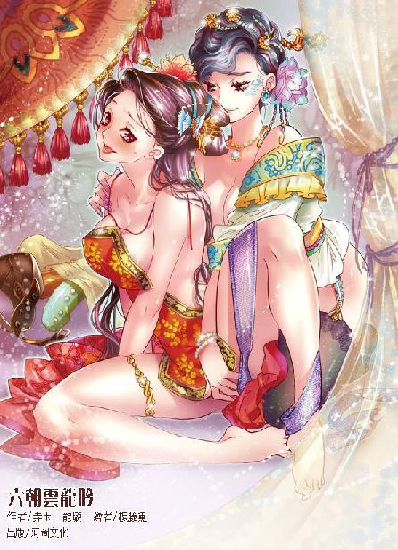

第62集·君心莫测
汉国篇（14/28）
出版日期：2015-12-24
【本集内容简介】
程宗扬迟迟等不到云大小姐，决定前往云府一探究竟，留下蛇夫人在客栈守护。长夜漫漫，蛇夫人连同惊理与一女子正翻云覆雨时，一道身影从窗外跃入……
拍卖会场暗潮汹涌，“暗标”的手法也让程宗扬狠狠阴了秦宫一把，洛都富商抢食云家产业，却不知一场摧毁汉国商业的风暴正在酝酿。
程宗扬在说服班超为程氏商会效力后前往上清观，巧遇打猎受伤的刘骛，还让他见到了真正的赵和德！
※ ※ ※ ※ ※

封面人物：孙寿、蛇夫人
北宫，北寺狱。
刘骜拂了拂手，似乎想拂去空气中的腐臭味。赵王自尽，太子刘丹被诛，其余家眷伏罪之后已经被发往郡邸狱，北寺狱内此时只有一名囚犯。
牢房内放着一只巨大的铁笼，一名壮汉两侧琵琶骨被铁链穿过，吊在铁笼上方，他上身赤裸，胸背伤痕累累，这会儿垂着头，似乎已经昏厥过去。
旁边几名内侍跪在地上，连大气也不敢喘。北寺狱就在北宫，但天子继位以来，还是头一回踏足此地。上次因为有囚犯失踪，当班的内侍被全数诛杀，新来的这些无不胆战心惊。
刘骜用一块手帕掩住鼻子，“他就是郭解？”
旁边的内侍还没来得及开口，那壮汉忽然抬起头，他恶狠狠啐了口血沫，狞声道：“正是你爷爷！”
那内侍一听就慌了，一边扑上去用铁钩朝他嘴上乱砸，一边冷汗直流地斥骂道：“该死的贼囚！让你乱说！让你乱说！”
一个尖细的声音道：“你把他嘴打烂了，还怎么说话？臭死了……”中行说嫌牢里太臭，不满地嘟囔几句，然后道：“把他阉了。”
内侍赔笑道：“公公好主意——先把他放下来！”
张放左右看了看，除了自己全是些太监，连个有身份的人都没有，只好硬着头皮道：“圣上，这厮在市井间颇有些侠名，可杀不可辱……”
刘骜冷冷道：“连你都知道他的名声，看来知道的人不止是市井。”
张放扑通跪下，“臣不敢。”
刘骜扬起下巴，睨视着笼中的“郭解”，冷冰冰道：“区区一介布衣，既非朝廷大臣，又非饱学硕儒，既无文名，又无军功，竟然蓄养死士，当街行凶，白昼杀人，宣名于闹市——朕的治下居然还有这等子民！你眼中还有没有王法？”
“郭解”被内侍扯着铁链放下来，两肩的伤口不断溢出鲜血。他喘了口气，扬声道：“杀人者，非是我郭解！”
“那是谁？”
“天下热血男儿何止千万！”
“好个狂徒！你的意思是，只要你郭大侠振臂一呼，他们就敢无视王法，为你杀人夺命？”刘骜怒极反笑，“好好好！动刑！”
刘骜话音未落，“郭解”身体忽然一动，从内侍手中挣脱出来，穿在他肩间的铁链猛然绷直，在血肉间磨擦得血花四溅。众人还没有反应过来，他已经扑到笼边，手臂从铁栅间伸出，往刘骜抓去。
刘骜站的位置离铁笼有三四尺远，即使“郭解”伸直手臂也无法够到，谁知他低吼一声，臂上青筋暴起，已经伸到尽头的手臂陡然长出半尺，一把抓住刘骜腰间的剑柄。
“逆贼！”中行说头一个反应过来，可惜他嘴巴比手更快，先尖叫了一声，才拽住刘骜，往后躲避。
这边张放飞起一脚，正中“郭解”面门。那壮汉脑袋一晃，鼻间鲜血长流，但紧接着，那柄天子剑锵然出鞘。
刘骜只退了半步，便即停下。
“郭解”另一只手也从铁笼中探出，抓住他的御带，那柄天子剑稳稳架在刘骜放颈中。
张放叫道：“快放手！”
中行说尖叫道：“不要乱来！”
笼中几名内侍吓得屁滚尿流，当场就有几人尿了裤子。“郭解”双臂被鲜血染红，手掌却稳如磐石。刘骜被扯得贴在铁笼上，他脸色铁青，身子一动也不敢动。
“郭解”沉声道：“草民听说，天子无戏言，一言即出，便为御旨。不知道是不是真的？”
“不错！”中行说尖叫道：“天子金口玉言，天下士民无不凛从！你赶紧放手！就立刻赦免你！”
“赦免？”“郭解”嘿嘿一笑，“用不着。我只想请天子说句话，不要牵连到我郭解的家人。”
“好！”中行说抢着道：“无论如何都不会牵连到郭大侠的家人！”
“郭解”没有理会中行说，只紧紧盯着刘骜，“我们江湖一诺千金、生死不易，天子乃天下之主，想必不会食言吧？”
刘骜铁青着脸道：“如他所言。”
“郭解”笑了起来，他放开刘骜的衣带，秉剑揖了一礼，“多谢天子。”
中行说和张放一起冲来，把刘骜挡在身后。中行说气急败坏地说道：“你个蠢货！逼着天子赦免你的家人，却忘了赦免你自己！杀了他！”
“郭解”大笑道：“我郭解挟持天子，哪里还敢想赦免？只要能放过我的家人，我郭解何惧一死！”
他横起天子剑，抬指一弹，剑身微颤，声如龙吟，赞道：“好剑！好剑！能死在这天子剑下，某家此生足矣！”
他说着横剑一挥，剑锋斩过脖颈，头颅溅血飞起，脸上兀自带着笑容。
直到“郭解”的尸身倒下，几名内侍才如梦初醒，冲过来对“郭解”的尸体又踢又打。
刘骜浑身颤抖，忽然叫道：“杀了他们！”
张放已经出去叫来几名期门，闻言手一摆，那些期门武士冲进笼内，将里面的内侍尽数杀死，连“郭解”的尸体也补了几刀。
刘骜余悸未消，颤声道：“将郭解家人……尽数族诛！”
中行说道：“这不行吧？刚说好的……”
张放只想着往回补救，争辩道：“方才圣上已经赦免过他的家人。但郭解大逆不道，血溅君前，冲撞御驾，理当族诛！”
中行说眨巴了一下眼睛，“你这是掩耳盗铃，你知道不？”
刘骜没有理会他俩的争论，只冷着脸快步而出，但他双腿还有些发抖，上台阶时险些绊倒，旁边的期门连忙扶住，才走出地牢。
一名白发苍苍的老妇已经门外跪候多时，她俯下身，双手放在额前，庄重地叩首行礼，然后直起腰，淡淡道：“牢狱乃污秽之地，陛下贵为天子，切不可轻纵。”
刘骜脚步停顿了一下，应道：“朕知道了。”
淖方成望着天子的背影，良久，深深叹了口气。站在她身后阴影中的胡夫人缓步上前，将她扶了起来。
※ ※ ※ ※ ※
月上中天，喧嚣了一天的里坊早已沉寂下来，街巷人迹断绝，唯有寒风卷起落叶，发出“沙沙”的轻响。
冯源闩上门，拿起油灯，在客栈里巡视了一遍。时值初冬，往来的客商像候鸟一样纷纷返乡，客栈的生意本来是淡季，但随着诏举日期临近，越来越多的书生文士涌入洛都，冀望着能鱼跃龙门。来自郡国的知名文士大都投宿在各地官方所设的驿馆中，无名之辈只有自找门路。这处客栈在通商里也属于最不起眼的，投宿在此的士子也差不多算是最贫寒的。
老旧的楼板发出“吱吱呀呀”的声响，客栈一共住了六名客人，除了一个折了本钱、无法回家的小贩，其余五位都是文人，一个是法家门徒，一个习的是黄老之术，另外三个都是儒生。六人占了一楼和二楼两处通间，顶楼的单间太贵，这些囊中羞涩的士子能省一文是一文，自然不去妄想。
其实按着程宗扬的想法，应该把房价订得高高的，让客人知难而退，一个客人都不收才好，免得麻烦。但冯源年轻时颇吃过些苦头，看到那些士子的落魄之态，不免心软，跟家主打了半天太极，终于收留了几个实在是穷困潦倒的书生。
客栈的油灯是另外算钱的，那些士子舍不得油钱，一入夜便早早睡去。其实来洛都的书生里面，九成连诏举的资格都不会有，但他们宁肯来碰碰运气，指望自己能路遇贵人，一夜之间飞黄腾达。
楼上楼下看了一遍，见那些书生没有饿死在房里的，冯源也就放下心来，拿着油灯回到柜台内侧，进了里面的小屋。
程宗扬笑道：“就你操心多，赶紧歇着去吧，这边交给我了。”
冯源打了个呵欠，“那我就偷个懒。程头儿，这灯给你留着。”
程宗扬接过油灯放在柜台上，等冯源离开，然后取下门闩，把门打开半扇。
夜色如墨，破旧的客栈中一灯如豆，在寒风中透出一丝萧索。足足等了一个时辰，眼看天近子时，还没有动静，程宗扬不禁心里嘀咕：云大妞不会是放了自己鸽子吧？
又等了半个时辰，已经快要入定的程宗扬忽然心头一动，抬起头来。
屋内不知何时多一个身影，细腰丰臀，艳如蛇蝎，却是蛇夫人。
“你怎么来了？上清观有事？”
蛇夫人俯身施礼，一边道：“回主子，观中无事，只是主子这几日都没有往观里去，奴婢和卓奴、凝奴商量，怕是主子诸事繁忙，不如轮流过来伺候。”
想起卓美人儿和凝美人，程宗扬不禁心头微动。死丫头一走几天没有动静，自己忙得连去上清观偷香窃玉的空都没有，白白放着几个美人不用，实在是太浪费了。可惜今晚自己还约了云大妞，也不知道能不能吃到口。
“你去一趟云府，悄悄去见云大小姐……”程宗扬原本想让蛇奴跑腿，转念一想，她跟云丹琉不熟，万一惹出乱子更麻烦，“算了，我还是自己去吧。你在这里看着店，别乱走。如果我今晚不回来，明天一早你去云家找我。”
蛇夫人仔细应下，程宗扬随即披上一条大氅，闪身出门。寒风一吹，颇有些凉意，他戴上兜帽，接着消失在黑暗中。
蛇夫人楼上楼下走了一圈，知道里面住的只是些普通客人，心里便有了数。她等了一会儿，不见主人回来，眼见长夜漫漫，枯坐无聊，索性取出一只同心银铃，轻轻一敲，然后笑道：“妹妹，我来了。”
片刻后，惊理的轻笑声传来，“原来是蛇姐姐。既然来了，怎么不来找我玩呢？”
“那可不成，主子吩咐，让我在客栈守着。”
惊理笑了几声，然后道：“那我去找你好了。窝了这几天，也怪闷的……”
半个时辰后，两个穿着斗篷的女子从半开的大门进来，惊理摘下兜帽，朝蛇夫人嫣然一笑。蛇夫人比了个噤声的手势，示意楼上有客人，然后过去闩上门。
蛇夫人和惊理一左一右把那丽人夹在中间，笑吟吟往楼上走去。木制的楼梯又窄又陡，三人身子几乎贴在一起，两女各伸出一只手，伸到中间那丽人的裙裾里面。孙寿抱着一只包裹，一边迈步，一边半是害羞半是顺从地扭着屁股。
好不容易到了楼上，两女这才放开手。房间已经整理过，但还没住过人，屋内只有一张木榻，一条长几，榻前铺着藤席，上面放着几只坐垫，虽然不怎么华丽，但都是没用过的。
惊理道：“主子呢？”
“出去办事，今晚多半是不回来了。”蛇夫人笑骂道：“好你个小淫妇，我们姐妹多日不见，一见面你就问主子。这些天你可没少偷吃吧？”
“这真是冤枉我了。我也有日子没见过主子，还想着是被你们缠住了呢。”
两人说笑着朝房内走去，把孙寿一个人扔在门口。孙寿自觉地把包裹放在门边，回身掩上门，然后摘下兜帽，解下斗篷。她穿着一条绛红色的曲裾深衣，边缘镶着深红色的滚边，衣领交在胸前，依次露出里面中衣和内衣的丝织衣领。宽大的衣袖一直垂到脚边，腰间系着一条素白的长带，下面是一条同样质地的素绢裙，雪白的裙摆宛如一面圆盘，贴在地板上。
她衣饰并没有耀眼的奢华，但极为合身，每一处细节都精致无比，曲线优美动人，素裙朱衣，衬托着她凸凹有致的身材，宛如一只精美的花瓶。
孙寿逐一解开外衣、中衣、长裙、内衣……一件一件放在旁边，最后解下贴身的小衣和胸衣，褪下薄如蝉翼的亵裤，直到身上一丝不挂，裸露出雪滑如脂的胴体，然后四肢伏地，赤条条爬到两女面前。
两女并肩坐在榻上，絮絮地说着话，谁都没有理会她。孙寿就像一只听话的宠物般，温驯地伏在两人脚边。室内的寒意与外边差不多，孙寿虽然还能抵御，但皮肤不由自主地绷紧，显得愈发光滑。
蛇夫人问起当日遇袭的事，“真是龙宸的人？”
“是他们的手段，绝不会错。”
“主子怎么说？”
“消息没传出去，龙宸多半还不知道是谁下的手。但主子说了，即使他们不来找麻烦，这事也不能就这么算了。等腾出手来，谋定后动，狠狠让他们吃个大亏，往后不敢再找我们程氏的麻烦。”
蛇夫人舒了口气，“若是以前，听到龙宸，我能跑多远就跑多远。幸好遇到了主子，即便跟龙宸对上，也不用担惊受怕。”
惊理道：“是幸好遇到了妈妈。”
“还用你说？”蛇夫人白了她一眼，“说起来，妈妈年纪比我们小得多，可在她面前，我就觉得自己平白矮了三分，连膝盖都是软的，恨不得变出条尾巴来摇着，讨她欢心。别说为奴为婢，就是给妈妈当狗我也乐意。”
惊理笑道：“怪不得是姐姐，连马屁都拍得这么好。”
“敢说我拍马屁？难道你不是这么想的？”
两人说笑了一阵，才把目光放到脚边那具光溜溜的玉体上。
蛇夫人道：“你怎么把她也带来了？”
“我若不在，怕她被老鹰叼走了。只好走到哪里都带着。”惊理笑道：“姐姐一个人怪孤单的，夜来无事，也好拿她解闷。”
说着，惊理吩咐道：“寿儿，还不过来服侍蛇姐姐？”
孙寿爬到蛇夫人脚边，扬起精心妆扮过的娇靥，露出一个讨好的笑容，然后用牙齿咬住她的鞋跟，帮她除下鞋子，再咬住她的袜尖，小心翼翼地扯了下来。
蛇夫人笑道：“这丫头被你调教得有点模样了。”
“论乖巧，还比不上凝奴。不过，寿儿也有桩好处……”惊理贴在蛇夫人耳边，轻声说了几句。
蛇夫人眼中露出奇异的光彩，“处子？怎么可能？”
惊理笑道：“我刚听说也不信呢。这几日仔细验看过才知道，狐族的元红可是与寻常女子大不相同。”
“左右是在那个里面，又能变到哪里去？”蛇夫人还是不信，“何况做都做了，干嘛要藏起元红？说不定她们是故意用变化之术，变出元红来骗人的。”
“狐族的元红与变化之术无关，而是……”惊理笑道：“姐姐若是不信，验过便知。”
蛇夫人生出几分好奇，“怎么验的？”
“寿儿，让蛇姐姐看看你的元红。”
孙寿勉强笑着，娇滴滴应了一声：“是。”
她转过身，趴在榻前，将那只丰翘白腻的雪臀高高翘起，双手抱住雪滑的臀肉，朝两边分开，将秘处敞露出来。
蛇夫人抬指轻弹，长几上的油灯发出一声细微的爆响，接着光芒大作，如豆的灯光瞬间膨胀数倍，将室内照得亮如白昼。灯光下，那只白艳艳的大白屁股仿佛发出光来，每一个细微之处都被映照得纤毫毕露。
孙寿的性器堪称完美，雪白的大腿根部，娇美的牝户宛如含苞待放的牡丹，在灯光下艳光四射。两片娇嫩的阴唇软软合在一起，中间一条凹陷的细缝儿，显露着红玉般柔腻的光泽，顶端红嫩的花蒂微微突起，周围光溜溜没有一丝毛发。雪滑的臀沟间，那只嫩肛缩成一点，仿佛含羞的雏菊，小巧而又柔润。
惊理一脚伸到孙寿腹下，用玉趾挑弄着她的花蒂。孙寿星眸半闭，一边发出柔媚的低叫，一边用指尖分开阴唇。
在两女的注视下，玉户中间那只红腻的穴口仿佛被一只无形的物体楔入般，羞媚地一点一点张开，先是指尖大小，然后慢慢的越张越大，直到在她臀间张开成一个直径寸许的浑圆入口。
在惊理的挑弄下，孙寿下体已经春潮涌动，从臀后看去，那只水汪汪的蜜穴圆圆张开，蜜腔内红腻的蜜肉一览无余，雪亮的灯光下，湿淋淋的蜜肉微微蠕动着，散发出妖艳的光泽。
随着蜜腔的蠕动，一团秘藏在体内深处的软肉缓缓浮现出来。与人类处女不同，狐族的处女膜是完全封闭的，被蜜汁般的淫液一浸，膜体仿佛透明一样，能隐约看到膜体后面鲜嫩如新的秘径。
蛇夫人奇道：“这是怎么回事？难道我们以前都干错了地方？”
惊理道：“这些骚狐狸淫穴内别有蹊径，寻常交媾时，阴窍像人一样通往子宫，元红所在的秘径，却是通往丹田，最是性命交关的所在。除非她心甘情愿献出元红，平常都隐藏不见。”
“丹田？”
蛇夫人一听就明白过来。丹田是修者的性命之本，不是十二分相熟，绝不会有人肯放开丹田让人探查，更何况是让人把阳具直接插入，在里面搅弄取乐？丹田是气海所在，脆弱无比，对方不需要有什么歹心，只要不那么怜香惜玉，动作略微粗暴一些，对女子来说就如同一场大劫，轻则受创，重则殒命。
惊理道：“龙宸那些人捕到雌狐，都会逼迫她们献出元红，在她们丹田里面肆意蹂躏，能活下来的，不过十之二三。”
蛇夫人一手伸到孙寿穴内，用指尖抚摸着那层娇柔的嫩膜，一边笑道：“倒是有趣，不若我采一个试试。”
蛇夫人笑着起身，抬手拍了拍孙寿的臀肉。孙寿不敢闪避，只哀求道：“姐姐饶命……”
“放心，姐姐只不过尝尝鲜，断不会弄伤你的丹田。”
孙寿央求道：“奴婢留着元红，是给主子享用的。待主子用过，奴婢再陪姐姐快活可好？”
蛇夫人一听就熄了这份心思，可她虽然不敢和主子争抢，真采了她的元红，但被一个最低等的贱婢逆了心意，不免有些火气，冷笑道：“你这骚狐狸，都被人干滥了，还装什么处子，一门心思勾引主子吗？”
孙寿讨饶道：“奴婢不敢，求姐姐息怒……”
惊理笑道：“死罪可免，活罪难饶。寿儿，还不把你的后庭花献出来，让蛇姐姐给你开苞？”
蛇夫人啐道：“这贱婢的后庭我又不是没用过，哪里有什么好开的？”
惊理娇俏地眨了眨眼，“姐姐试过便知。”
美妇跪在榻前，妖媚的面孔露出一丝羞色，她一手伸到臀后，指尖按住那只嫩肛，轻轻揉弄起来。雪白的圆臀在她指下微微颤抖着，每揉一圈，她指下就生出一丝细微的变化。
蛇夫人渐渐看出异样，随着她的揉弄，这贱婢原本就小巧柔润的嫩肛竟然像变魔术一样，越来越小。等她松开手，那只嫩肛只剩下小指指尖大小，从后面看来，没有半点异色，白生生的嫩孔紧凑地缩成一点，衬着又白又大的丰臀，就如同雪团间一个小小的凹陷，愈发显得小巧精致。
惊理笑道：“这贱婢的变化之术，能把后庭变到原本一半大小，插弄时别有趣味。我本来想送给主子逗趣，倒让姐姐抢了先。”
蛇夫人伸手按了按，果然紧凑，不由笑道：“倒是有趣。”
惊理道：“贱婢，还不快给蛇姐姐赔罪？”
孙寿叼着包裹爬到蛇夫人脚边，用牙齿扯开。那包裹她一路抱来，里面却是六七支不同质地、形态各异的假阳具。孙寿挑出一支，正待给蛇夫人戴上，蛇夫人却脚尖一挑，选出另外一支，“就用这个好了。”
孙寿心脏不由漏跳了一拍，她不知道那根假阳具是从太泉古阵带出来的物品之一，但作为里面最大的一支，孙寿早已尝过它的苦头。它长近尺许，最粗的部位犹如鹅蛋，不知是用何物制成，像人体一样颇具弹性，顶端的龟头和表面凸起的血管无不栩栩如生，而且通体乌黑，看上去极为狰狞。
孙寿咽了口唾沫，把胶棒系到蛇夫人腰间，然后楚楚可怜地张开红唇，含住胶棒维妙维肖的龟头，细致地舔舐起来。那双水灵灵的美目像是会说话一样，露出讨饶的目光。
蛇夫人对她乞怜的目光视若无睹，随手抓住她那对饱满的雪乳，在手中揉捏把玩。忽然她指间一拧，孙寿乳尖一阵剧痛，乳头仿佛被一只铁夹夹碎一样，痛得她几乎淌下泪来。
蛇夫人笑眯眯看着她，然后松开手。
孙寿一句话也不敢说，只小心吐出那支几乎塞满她整个口腔的龟头，然后乖乖转过身，将那只白生生的大屁股举得高高的，强忍住心底的羞耻和惧意，娇声道：“求姐姐给贱奴的屁眼儿开苞……”
蛇夫人伸出细长的舌头舔了舔嘴唇，一手扶住那根狰狞粗大的假阳具，在那只雪团般的美臀上“啪啪”抽打几下，然后对准那只小巧的肉孔，用力捅入。
孙寿低叫一声，被撞得险些跌倒。她勉力撑住身体，脸上露出吃痛的表情。
夜色已深，客房中，一个美妇光溜溜伏在席上，雪白的圆臀向后挺起。一根通体黑黝黝的大棒子硬梆梆捅在她臀间，露在外面的部分还有半尺长短。又粗又长的棒身直挺挺没入美妇臀内，将如雪的美肉挤得膨胀起来，周围溢出一股殷红的血迹。
在她身后，一个身材丰腴高挑的艳妇用力挺动腰肢，乌黑的胶棒仿佛一条粗大的蟒蛇，在那美妇臀内挤进挤出，鲜红的血迹不断溅出，淋淋漓漓洒在她雪白的大腿间。
美妇趴在地上，痛得眉头轻颤，红唇圆张着，不时发出吃痛的低叫，一边还要娇声道：“姐姐好厉害……奴婢的肠子都要被搅碎了……”
“姐姐好棒……奴婢……奴婢不行了……”
艳妇红唇微微挑起，目光中带着一丝残忍的趣味，阳具越干越深，直到每次插入都顶得她叫不声来。
惊理笑道：“该我了，蛇姐姐先歇歇，让我再给寿儿开次苞。”
孙寿含羞洗去臀间的血迹，一手掩住受创的肛洞。不多时，她松开手，嫩肛已经恢复原状，又成了未经人事般小巧鲜嫩的模样。
这一次孙寿按照两女的吩咐，仰身躺在长几上，双腿朝上举起，两手抱着屁股，露出羞处，就像一个出嫁的新娘一样，被惊理破体而入。鲜血又一次溢出，染红了木几。
两女一边干一边说笑，忽然神情同时一动，接着窗户被人一脚踹开，一个声音凶巴巴地质问道：“怎么不开门？”
※ ※ ※ ※ ※
一个火红的身影从窗户掠入，看到室内的情形顿时大吃一惊，玉颊瞬间变得通红。那女子愕然片刻，以为自己走错了地方，赶紧掩住面孔从窗户跃出。
蛇夫人与惊理面面相觑，还没等她们反应过来，那女子又重新跃了进来。这一次她没有再客气，像只胭脂雌虎般，气势汹汹地说道：“姓程的小人呢！让他滚出来！”
惊理认出她来，赶紧赔笑道：“家主人去了云府。”
云丹琉恨声道：“那个笨蛋！”
惊理道：“大小姐先歇歇，我去叫主子回来。”
“你认识我？”
“大小姐的风采，奴婢即便只见过一眼，也不会认错。”
“不用叫他。”云丹琉没好气地看着她们，然后撇了撇嘴，“果然无耻。”
室内诸女都是眉眼通透之辈，云丹琉夤夜来此，多少也能猜出她的来意，虽然不知道主子是怎么勾上手的，但身份必定在自己这些奴婢之上，说不得又多了一位主母，于是不言声地跪成一排，连衣服也顾不得穿。
云丹琉目光从三女身上扫过，然后停在惊理身上，在脑中把她的相貌和程宗扬说的对照了一下，问道：“你叫惊理？”
惊理顺从地俯身行礼，“是。”
“你是那个蛇夫人？”
蛇夫人俯身道：“是奴婢。”
云丹琉看着中间那个妖媚的妇人，“你是凝奴？”
孙寿脸上红晕未消，含羞道：“奴婢单名一个寿字。”
云丹琉挑眉道：“怎么还有一个侍奴？”
惊理连忙道：“寿奴还未正式入门，不作数的。”
“你们在做什么？”
三女互视一眼，孙寿讪讪道：“奴婢在陪两位姐姐欢好。”
“你是已婚的妇人？为什么会流血？”
“两位姐姐给奴婢的后庭开苞，略有些落红……”孙寿勉强笑道：“不妨事的。”
“那个无耻小人！连有夫之妇都不放过！”云丹琉气得咬牙，寒声道：“你家是哪里的？”
三女都闭上嘴。眼看云丹琉脸色越来越不好看，惊理只好道：“她是襄邑侯的家眷。”
“襄邑侯？那个小人怎么跟吕冀勾搭上了？”
三女都不敢回答。
云丹琉又问道：“你是吕冀的侍妾？”
孙寿小声道：“奴婢是吕冀的妻子。”
云丹琉瞪大眼睛，她怎么也想不到，这个半夜时分，在一处破旧客栈内，被两个奴婢当作娼妓一般玩弄的妖媚妇人，竟然是襄邑侯吕冀的夫人，堂堂封君。
“你是襄城君？天子的舅母，太后的弟媳？”
惊理笑道：“她前些天被主子收服，因为还未入门，只是最低一等的下贱奴婢，大小姐只管叫她寿奴便是。”
云丹琉目光一转，然后回身坐在榻上，“你们刚才怎么做的？接着做。”
蛇夫人与惊理互视一眼，彼此眼中都露出一丝笑意，这倒是一个讨好未来主母的机会。至于孙寿怎么想的，根本无关紧要。
有主人亲自观赏，两女更加卖力。蛇夫人取出几粒催情的药丸，塞到孙寿口中，然后用胶棒顶进她喉咙内。
惊理将孙寿推到几上，让她仰身躺好，然后抱住她的双腿，架在肩上。两女一同上阵，一前一后干着她的小嘴和屁眼。
孙寿接连服下几倍的春药，早已意乱神迷，在两女的挑逗下，很快就淫态横生。她一边用红唇香舌服侍着蛇姐姐，一边抱着屁股，使劲掰开臀肉，露出屁眼儿，任由惊理姐姐的插弄。
窗外寒风呼啸，斗室内却是春光旖旎。两个赤裸的美女一边挺动身子，一边笑声不绝。在她们中间，一具白光光的玉体躺在几上，胸前两团饱满的雪乳来回晃动着，充血的乳头硬硬挑起，随着雪乳的晃动，一荡一荡划着圈子，在灯光下散发出红宝石一样淫艳的光泽。
※ ※ ※ ※ ※
天色微亮，云府大门刚一打开，程宗扬就当先登门。
云家原本就戒备森严，云苍峰回来时又带了大批好手，因为府中放着十几万金铢和巨额财物，警戒程度更是成倍上升。云丹琉从里面出来还大费周章，一直到后半夜才找到机会，程宗扬想从外面进去，比登天都难，他转了一晚上，连个缝都没找到，这会儿鼻子不是鼻子，眼睛不是眼睛，一脸的不爽。
门口的守卫不知道发生了什么事，也不敢多问，急忙进去通报云苍峰。
程宗扬在客厅转了几圈，心下盘算着，等见到云丹琉，一定要狠狠鄙视她一番，竟然敢放自己鸽子，瞧自己在外面蹲这一宿，连头发都结霜了。
正自火大，忽然看到云丹琉从外面进来，身后还跟了一个女子，身材颇为眼熟……竟然是蛇奴？
程宗扬张大嘴巴，接着明白过来，不由懊恼地敲了敲脑袋。云丹琉白了他一眼，冷着脸找了个位置坐下。蛇夫人含笑跟在后面，殷勤地给她斟茶送水，好像她是云丹琉的贴身奴婢一样。
这都什么事啊，自己在巷口吹了一夜的寒风，连根毛都没捞着，结果云丫头跑到客栈待了一夜，顺便还把自己的侍奴给收服了。
程宗扬还没找到开口的机会，云苍峰已经出来了。他看了程宗扬一眼，不由讶道：“衣服怎么湿了？”
程宗扬含糊道：“有点事，在外面奔波了一夜。”
“丹琉，你去拿些吃食来。”
云丹琉一万个不服气，偏又不能开口，只好横了蛇奴一眼，“你去！”
蛇夫人屈膝施了一礼，退到厅外。云苍峰道：“她是谁？”
程宗扬道：“家里的奴婢。”
云苍峰依稀有点印象，点了点头，不再多问，随即拿出一张纸，上面是两人早已商议好的拍卖清单。
程宗扬打起精神，接过清单仔细看着。清单上的大头是田地，云苍峰与云秀峰联络之后，拍板将云家在汉国拥有的田地几乎全部拿出来拍卖，这也是云氏拿出的最大一块肥肉，足够那些商贾、豪门打得头破血流。其次是商铺，清单上大大小小一共列了近四十处。然后是各种珍稀药材、玉石香料、犀角象牙、珠宝饰物等奢侈品。这部分一大半还被执金吾扣押着，但不妨先拿来拍卖。最后是一些普通货物，包括铁器、木材、丝帛布料等等，区别在于每一种都数量极大。
清单所列的拍卖品后面，列着几行数字，一行是准备公布的起拍价，另一行是云氏估算的暗底。总额不仅足够偿还欠款，还略有超过。云氏虽然豪富，汉国的产业也及不上此数，最后的货物中，一大半都是程郑提供的，甚至连陶氏钱庄开出的十万金铢货物也全都押上去，让那些商人抢个够。
程宗扬想了想，又在清单后添了五百匹马，分成五批拍卖，注明所有马匹都来自于晴州的泾溪马场，至于暗底价格，则比市价低了一成有余。
云苍峰道：“这价格似乎低了些。”
“算缗令把车船马匹都纳入算缗，现在不卖，以后就卖不出去了。”
“泾溪马场……是赵墨轩？”
“云老哥也认得他？”
“有过一面之交。”云苍峰道：“此人豪爽大度，是个做大事的人。”
程宗扬笑道：“正好替他卖些马出去。我已经跟他说好，马价的半成作为佣金，云老哥不介意吧？”
“有何介意？”云苍峰大笑道：“早知有这等无本生意，我不如开个榷场，专事拍卖。”
“难得有这样的机会，外面那些商人都以为吃定咱们，心气十足，当然是能卖出去多少就卖多少。”
“那就这么定了。”
程宗扬提醒道：“把项目错开，一批一批拍卖，尽量让他们都能买到。”
云苍峰笑道：“老夫省得！”
※ ※ ※ ※ ※
天色刚亮，参加拍卖的债主便陆续登门，未及辰时，四十余家便都已到齐。
云家把包括主堂在内的整个外院都腾了出来，作为拍卖的会场，沿着游廊摆下四十六张座席，席位各用屏风隔开，前面挂着珠帘，院内正中则是拍卖台。所有的席位都能看到拍卖的主台，彼此间却无法窥视。
前来拍卖的商家少则两人，多则三五人，此时各自聚在一处，交头接耳，窃窃私语。
云苍峰首先登上拍卖台，不痛不痒地说了几句，最后道：“当日幸得各位援手，使我云氏渡过难关。今日的拍卖绝不会让各位吃亏，只要拍定，云某立刻与各位签订契约，当场交割。若是哪位朋友一件货物都没看中，那就只能拿着金铢离开了。事后可别怪我小气。”
众人附和地笑了几声，场中便安静下来。
“因为今日多半要签约，云某请了几位中人。”云苍峰抬手示意了一下正中的几席，逐一介绍道：“洛都商会的方老先生，如意居的秦掌柜，还有陶氏钱庄的曲掌柜。”说着抱拳施礼。
这三人都在洛都的生意场上颇有声名，作为中人绰绰有余，众人也无异议，只是在座的几家豪强面色有些不好看。云家行事如此仔细，摆明了不给旁人趁火打劫的机会，他们准备好的如意算盘统统打不响了，脸色哪能好看得起来？但话说回来，云苍峰方才也说了，最差的结果也是拿着金铢回去，云家已经承诺分文不少地还清欠款，拍卖只是锦上添花，实在找不到什么发作的理由。
云苍峰道：“辰时已到，拍卖开始。”言罢略一拱手，退到台下。
一名专门请来的拍卖师登上木台，说道：“老朽在榷场数十年，还是头一回经手这么大的生意。云三爷既然信得过我，老朽只能勉力一试，还望各位多多捧场。”说着作了个团圆揖。
众人纷纷道：“应该的，应该的。”
等院内声音稍息，拍卖师道：“闲言少叙，先来看第一件拍品：上汤田地十顷，起拍价一万金铢。”
院内顿时掀起一片声浪，众人都知道云家这回要出血，但谁也没想到第一件拍品就是洛都附近一千亩土地。
拍卖师略略提高声音，“上汤的土地大伙都知道，一亩地总要十二三枚金铢上下。难得的是这十顷土地只有两块，一块六顷有余，一块三顷有余，相去只有一道沟渠，都是上好的水浇地。老朽年初拍过一块，大小不及一顷，就卖出一千五百金铢。”
看到有人试图隔着屏风说话，拍卖师不轻不重地咳了一声，“云三爷为了大伙不伤和气，走的是暗标，各位也体谅老朽几分，别让老朽难作。各位手边都放着素底的折扇，若是有意，不妨在扇上写下价格。”
几案上摆着笔墨和空白的纸扇，由于有屏风珠帘的遮掩，无论比邻而坐还是隔院相对，都无法看到别人写的是什么，甚至写没写都看不出来，想使眼色打手势更是无从谈起。稍等片刻，一名护卫抱起封好的木箱从屏风后经过，已经写好出价的买家合起折扇投入箱上的孔中。
不多时便有三十余家投了折扇，另外十余家自认财力不济，直接放弃。护卫确认之后，捧起收好的折扇被送到后堂，程宗扬、云苍峰都在堂内。
送来的折扇被逐一打开，云苍峰定的暗底是一万二千金铢，不足此数的被弃之一旁，其余按报价高低在几上列成一排。
那些豪门全部都有出价，但价格不约而同都卡在一万二千金铢上下。倒是有两家商贾出价极高，其中一家出到一万六千金铢，另一家略低了五百金铢。
云苍峰看了眼扇上的标记，“出价的是洛下鹿氏和三眼井吉氏。”
程宗扬道：“谁借得多？”
“欠鹿氏的本息合计九千金铢，吉氏六千金铢。”
“这两家是做什么的？”
“两家都是阡陌相连的大地主，相比之下鹿氏实力更强一些，但吉氏产业更靠近上汤。”
程宗扬道：“吉氏实力较弱，按说卖给他们更合适，但鹿氏出价略高，而且吉氏离土地更近，只怕不会轻易舍弃——我看选鹿氏。”
云苍峰二话不说，从架上找出上汤的地契，提笔画押，转让给鹿氏，然后按上手印。
那护卫将写好的书契放入箱中，送到鹿氏席前。鹿氏大喜过望，立刻签字画押，然后由护卫送到中人席上，由三位中人在一式三份的契约上签字。
不多时，第一份拍卖便尘埃落定。云家与鹿氏的欠款两清之后，鹿氏还倒欠了云家七千金铢。
拍卖第二宗是一批布料，起拍价两千金铢，最后由一家布商以两千三百金铢正卡着云家暗底的价格吃进。
随后一批珍珠、两宗玉料的拍卖都没有引起波澜，但紧接着，五间位于外郡的商铺一次性卖出，又引起席间的骚动。连商铺都作价出售，云家真打算从汉国收手，连家底都不要了？这等机会绝不能错过了，在座商家都打起精神，盘算着该怎么出价。这次不是竞标，每家只有一次出价的机会，怎能不慎重以待？
折扇递上去不久，有人从后堂匆匆出来，对拍卖师低声说了几句。拍卖师点了点，然后笑道：“这批商铺果然抢手，出价最高的三家给出的价格竟然一模一样。没奈何，只能请三家再投一次。”
出价的只剩了三家，却比方才慢得多，即使隔着珠帘，也能感觉到三家的犹豫和紧张。足足等了一盏茶时间，三家才陆续报完价格。
拍卖过程虽然严格保密，但拍卖完到地头一看，就知道是谁家中的标，再加上程宗扬和云苍峰有意推波助澜，完成一笔交易就当场签约，很快众人便知道，这五间商铺最终花落孙家。
襄邑侯府的监奴秦宫脸色阴沉，那些珍珠、玉料倒也罢了，田地、商铺换在别处自己绝对不会放过，怎么也要争个七八轮才是。再说了，只要在场中亮出襄邑侯府的牌子，谁敢跟自己争？可这鸟暗标，在座的脸不见脸，只看出价高低，谁家的牌子都不好使。
看到孙家中标，他再也坐不住，使了个眼色，旁边的家奴心下会意，借口出恭溜了出去。过了一会儿，那家奴回来，小声道：“没见着人。”
秦宫心下大怒，昨晚几家商量好的同进同退，谁知道孙家说得好好的，一看到商铺就贪念大发，当先反水。他不仁我不义，生意场上也没有什么好说的。
秦宫一撩帘子，扬声道：“这拍卖不合适！”
拍卖师拱手道：“秦监有何指教？”
“指教不敢。”秦宫冷着脸道：“我只想问问，这暗标是不是价高者得？”
“不错。”
“高出一文也算是价高吗？”
见秦宫气势汹汹，拍卖师也担心里面出了什么纰漏，一边品味着他话里的意思，一边慢慢道：“当然。”
“几千上万金铢的生意，却被一文钱左右，这拍卖合适吗？”
“秦监的意思呢？”
“价格相差一成之内，第二轮竞价。”秦宫见拍卖师迟疑不决，不甘心地补充一句，“仍用暗标。”
“这却难办。”拍卖师道：“第一轮报价若在一成以内，大伙相差无几，第二轮又能差出多少？难道还要再报三轮、四轮？”
“就两轮！第二轮除非报价相同，谁高谁得！”
“待我向云三爷禀报一声，再作商量。”
拍卖师请上几位中人入内商议，场中众人又开始窃窃私语。秦宫哼了一声，重重坐下。既然要争，就争个痛快！襄邑侯府怕过谁来？况且他跳出来还存着一份心思，夫人点明了要云家拿出的一批香料，一轮定胜负，万一失手，回去可无法交代。若能改成两轮，多少还有些回旋的余地。
云宅后堂，程宗扬与云苍峰相视一笑，有人不服气早在两人预料之内，但这么快就有人坐不住了，倒是出乎两人的意料。秦宫的提议正中两人下怀，众人竞标次数越多，卖出的价格越高，他们哪里有不愿意的？等拍卖师进来，云苍峰只略微辩解几句，便从善如流地重新拟定了章程。
不多时，拍卖师带着新章程出来，宣布第一轮报价与最高价相差在一成到两成之内的，参与第二轮竞标，大宗货物以一成为限，小宗可放宽至两成，方式仍用暗标。第二轮竞标延用以前的规则，价高者得。
第二批拍卖开始，虽然仍是暗标投递，没有唱标的环节，但竞争无声中激烈了许多。那位拍卖师是此道的大行家，经验丰富，先是寥寥数语点出拍卖货物的特点，然后旁征博引，指出类似的货物以往的交易价格几何。程宗扬与云苍峰的目的是以出货为主，也没有在价格上多作文章，结果程郑的暗底几乎成了摆设，往往第一轮就被淘汰出去。
接连又拍卖出去几处田地和商铺，秦宫也不无小得，虽然价高了些，总算还在可以承受的范围之内。当听见拍卖师念道：“南海香料一批……”秦宫眉头一动，挺直身体。
旁边的家奴赶紧凑过来，低声道：“昨日夫人吩咐过……”
“我知道！”秦宫不耐烦地说道：“这批香料无论如何也要拿下！”
“……作价两万金铢。”
秦宫一怔，心里咆哮道：什么鸟香料竟然会这么贵！上好的香料虽然价比黄金，但由于量少，总价高不到哪里去。没想到这批香料竟然有两万金铢，足足两千亩的田地！
拍卖师道：“这批香料价格不菲，数量也自不小。单是龙涎一种，就有两斗之多。其他还有沉香、苏合香、鸡舌香……”拍卖师一口气列了数十种香料，以及每种的数量，最后道：“这批香料按市价，大概在两万四千金铢左右。”
旁边的家奴迅速算了一遍，最后报出的价格比拍卖师所说还略高一些。由于龙涎香难得，同样的价格只怕还买不到这么多龙涎香。
秦宫拿起笔，在折扇上狠狠写下：金铢二万五千。想了想又一笔抹去，重新换了一柄折扇，写下：金铢二万八千。
在座的都是生意人，对香料的价格都不陌生，第一轮报价多半会在两万四五左右。自己高出他们一成，直接拿下，免得到第二轮再横生枝节。
秦宫打的如意算盘，谁知偏偏有人不识趣，报的价格竟然和他相差在一成之内，与他一道进入第二轮。第二轮报价，秦宫权衡片刻，那人报价比自己少不到一成，多半是两万六千金铢，正好卡在一成之内。他如果想吃下这批香料，至少要再提价一成，两万九千金铢上下。
如果保险起见，自己的报价应该写个三万，可三万金铢买这批香料，未免吃亏。若是少一点，两万九千也尽够了。秦宫计较已定，提笔在扇上写下金铢二万九千。想了想，又加了个五百，胜负也许就在五百之上。
两家递上报价。过了一会儿，那名护卫将一张纸放在拍卖台上。拍卖师看了一眼，笑道：“还真是巧……只怕要再报第三轮了。”
怎么可能？秦宫险些站了起来，怎么这么巧，那边也报了个两万九千五百？连零头也不差？
第三轮报价紧接着便即开始，秦宫心里乱纷纷的，如果那家也报的两万九千五百，等于一下提了三千五百金铢，显然对这批香料志在必得。自己再报价应该报多少？三万一？还是三万两千？云家欠自家的款项本息合计不过两万金铢，难道自己还要从府里拿出一万两千金铢买这批香料？
那名家奴溜了出去，过了一会儿钻进来，贴在他耳边道：“那家的掌柜叫程郑，晴州来的商人。”
程郑？这个名字秦宫有点耳熟，接着想起来，那厮往日没少钻营，一度与府里的管事走得极近，挂着侯府门客的名头在外行走。后来不知道攀上谁的高枝，倒是有日子没见着他来献殷勤了。
这暗标真是坑人，大水冲了龙王庙，自家人跟自家人较起劲来。
秦宫心里骂了一声，向家奴使了个眼色。家奴又溜了出去，过了会儿苦着脸回来，向他摇了摇头。
秦宫心里“咯噔”一声，感觉到一丝反常。姓程的不过一个浑身铜臭的商人，如今借了谁的势，竟然连侯爷的面子都不卖？
时间不等人，台上已经开始催促，秦宫顾不得去琢磨这里面的道道，最后心一横，府里左右是夫人当家，她既然点名要买这批香料，多花几个钱自己捏着鼻子也得认了。
秦宫写下金铢三万两千，把折扇一合，递了出去。
片刻后，拍卖师在台上笑道：“这两家想必是有缘，今日的拍卖还是头一次出现要投第四轮的……”
“等等！”
拍卖师还没说完就被打断，秦宫霍然起身，高声道：“我要亮标！”
拍卖师怔了一下，“秦监何出此言？”
“没什么好说的！”秦宫拿出豪门刁奴的骄横之态，“我就不信世上有这么巧的事！我们襄邑侯府从不仗势欺人！只要你们把这宗香料的标底亮出来！让大伙都看个明白！敢不敢！”
“秦监想必知道暗标的规矩，若是有人提出亮标，无论生意成与不成，都要退席。”
“我当然知道！退就退！后面的标我也不竞了！”
“若是亮出标底，大家都无异议，秦监怎么说？”
“我加价一成把香料拿走，绝无二话！”
拍卖师扭头道：“程掌柜？”
程郑道：“现今香料大涨，若是加价一成，不如给我。”
秦宫用怨毒的目光盯着他，咬牙道：“两成！”
程郑深深看了他一眼，“那就是三万八千四百金铢，秦监可想好了。”
“只要你们亮出标底，我有何不敢！”秦宫冷笑道：“姓程的，你可要想好了！前几天你还在我脚底下讨食吃，我秦宫什么时候拿正眼瞧过你！敢跟我对着干？我倒想看看，洛都谁能罩得住你！”
当众被秦宫骂得狗血淋头，程郑却是毫不在意，老神在在地说道：“若非秦监要求亮标，我还不知道跟在下竞标的会是秦监，哪里谈得上对着干呢？洛都谁不知道秦监是吕侯爷的府监，岂是我这个小小商人惹得起的？”
程郑放了两句软话，众人都以为他要服软，谁知程郑身躯一挺，“但在生意场上，就要讲生意场的规矩！莫说秦监只是侯爷的府监，就是吕侯爷在此，也得按规矩来！”
※ ※ ※ ※ ※
商贾在汉国被欺压已久，都是敢怒不敢言。程郑此言一出，场中顿时传来一片低低的叫好声。
秦宫一张脸气成猪肝色，但有屏风隔着，也不知道是谁叫的，只能咬着牙含恨在心。
“诸位，既然咱们要守拍卖的规矩，还请慎言。”
拍卖师借着程郑的话头，不轻不重地暗捧了程郑一下，打了个圆场，然后与中人商量几句，又问过方才竞标的各家都无异议，随即取出这几轮暗标的折扇。
第一轮各家的报价刚一打开，秦宫就像迎面挨了一拳。
第一轮报价，程郑的暗标赫然是两万九千金铢，比自己还高了一千金铢。
第二轮报价，程郑谨慎了许多，只在九千之后添了个五百。
第三轮报价，程郑发现遇到对手，一举将价格抬到三万两千金铢……
跟程郑相比，自己的报价倒像是搅局的，先是卡在人家最高价的一成之内，然后又零零碎碎写了个两万九千五百，最后提价又跟人家撞到一起。
拍卖师把最后一柄折扇摊开，“秦监你看……”
秦宫脸上时青时白，只不过当着众人的面，实在不好掉襄邑侯府的面子，最后强撑着道：“拿书契来！”
秦宫签下以三万八千四百金铢竞得香料一批的书契，把笔一丢，当场退席。自己白白多花了一万多金铢，已经把侯府的平常用度挪空了，再坐下去也没钱竞标，平白让人看了笑话。至于回去之后怎么向主人禀报，他连想都不敢想。
云宅后堂，程宗扬看着秦宫灰溜溜退场，不禁哈哈大笑。
云苍峰也笑道：“你倒算得准，知道他不会善罢干休。”
程宗扬道：“姓秦的仗着吕冀的势，就数他跳得最欢，谅他也想不到我这边已经挖好坑，就等他往里边跳。”
“也难为你算得仔细。却不知襄邑侯府为何对这批香料如此上心？”
程宗扬打了个哈哈，“也许他们也听说香料大涨，想赚个差价吧。”
云丹琉狠狠白了他一眼，她昨晚在客栈遇到孙寿，早听说孙寿按他的吩咐，打发门下的监奴竞标香料，只许成不许输。有当家主母的命令，秦宫就算明知道前面是火坑，也只能闭着眼睛往里跳。这事说白了根本胜之不武，偏生这个无耻之徒说得跟他神机妙算一样，真是厚颜无耻！
云苍峰道：“这秦宫是个小人，只怕他将来生事。”
“云老哥不用担心。”程宗扬满不在乎地说道：“他平白多花了主家这么多钱，还想当他的监奴？能去庄子里种地就烧高香了。运气差点，被主人当场打死都有可能。这种小人就是狗仗人势，没有了主人的宠信，他连狗都不如。”
场中的拍卖还在继续，那位陶氏钱庄的曲掌柜名为中人，其实是陶五派来监督货物拍卖的。毕竟那批价值十万金铢的货物是他作的保，万一出了岔子，他也不用想继承家业了。
秦宫强迫亮标的举动，反而证明了云家的信用，程郑那番话更是让大家解气。接下来的拍卖顺风顺水，三个时辰之后，最后一批货物拍卖完毕，虽然有部分货物因未达暗底而流拍，最后所得款项仍远远超过云氏最好的预期。
包括田地商铺在内，所有物品一共拍出近三十万金铢。其中云家的产业、货物拍出十九万金铢，陶氏作保的六万金铢货物拍出七万有余，连程郑也拍出三万金铢——除了他手中的货物和代理的马匹，里面还包括了一批当日从延年阁抢到的珍玩。
由于是暗标，具体拍卖金额并未对外公布，不过参与拍卖的各家多少也能估算出来一二。虽然云家看似狠拿了一笔现款，但在众人看来，云家经此一劫，在汉国数十年的积累一朝丧尽，手上除了钱铢已经一无所有，想重新起家起码得一二十年工夫，根本不足为虑。
那些债主将云家产业分食一空，各自得意而归，回去弹冠相庆，却不知道一场足以摧毁汉国整个商业的风暴正在酝酿。
拍卖完成，云家所欠的款项一笔勾销，还拿到将近三万金铢的现款，付出的代价则是被扣押的货物耗费大半，云氏在汉国的产业更是几乎全盘易手。
另外七万金铢由程宗扬拿走，将来的利润与陶氏平分。赵墨轩的马匹由程郑代理，按照约定，总价的半成作为佣金交给云氏，程郑另收半成，抛去给赵墨轩的马价以外，其余都算程氏商会的收入。至此，整个拍卖的款项全部交割清楚。
至于云丹琉一场豪饮换来的巨额金铢，在这场拍卖会上完全成了道具，一个金铢都没有花出去。但没有这笔金铢让各家打消强逼云家还款的念头，这场拍卖会也开不起来。由于这笔钱是以程宗扬的名义借来的，仍由程宗扬拿回去运作，到期由他向陶氏还账，与云氏并无关系。
事后清点，程宗扬手头一下子多了二十余万的金铢，并且全是现款。为了这笔款项的安全，他也绞尽脑汁，最后全都堆到剧孟的地下室里。对他而言，这个建在屋里的大墓恐怕是洛都最安全的地方了。剧孟人就在墓里待着，上面有斯明信和卢景轮流坐镇，即便有人想打个地洞进来，土里还埋着个哈老头呢。
※ ※ ※ ※ ※
“洛都的豪强富商真是有钱啊。”程宗扬感慨道：“没想到一次就能做成三十万金铢的生意。”
蛇奴低喘道：“那些田地商铺都是平常难得一见的好东西，难怪他们发疯一样地去抢。”
“这么多金铢，倒是便宜剧孟了。”程宗扬羡慕地说道：“那家伙把铺盖一卷，干脆都睡金子上了——他也不嫌硌得慌？”
蛇奴美艳的肉体骑在他腰间，一边卖力地耸动屁股，一边道：“反正那些金铢也不是他的……只能过过干瘾……”
“你懂个鸟，人家是大侠，视金钱如粪土。别管多少钱，剧大侠都不会放在眼里，不过是找个乐子。”
蛇奴媚声道：“奴婢知错了。”
程宗扬挺挺下身，“换一处。”
“是，主子……”蛇夫人把湿淋淋的肉棒拔出蜜穴，带出一波淫水。她抬眼抛了个媚笑，摸索着把肉棒纳入后庭，扭动腰肢缓缓坐下。
程宗扬挪挪身体，换了个舒服的姿势，“一会儿你先回去。跟卓奴她们说，我今晚过去，让她们乖乖等着。”
“她们就盼着主子呢。只不过……”蛇夫人道：“云大小姐今晚不来吗？”
程宗扬没好气地说道：“我还想问问你们呢，你们昨晚都干什么了？那小妞今天一个劲儿翻我白眼。跟她说什么都爱理不理的。”
“就是平常干的那些……”蛇夫人吃吃笑道：“云大小姐……好像还不解风情呢……”
又是这一句。人家是大小姐，哪里能跟你们这种荡妇比？要让云大妞听见，砍死你都不冤。
程宗扬一抬身，把蛇奴压到身下，狂风暴雨般挺弄起来。不多时，那艳妇便脸色潮红，浪叫连声，在他身下忘情地扭动着，一颤一颤地泄了身子。
程宗扬计划晚上才去上清观，是因为他要见班超。上次月旦评之后，本来默默无闻的班超名声鹊起，可惜不是什么好名声，说句臭名远扬也不为过。与会的士林学子大都把他看成商贾的帮闲，刻薄些的甚至把他称为“商家走狗”、“士林之耻”，反正那些文人有才有闲，扣起帽子来一套一套的。
班超为此连面都不敢露，整日闭门苦读，准备在诏举中一鸣惊人，得官之后一展胸中抱负，将来好一雪前耻。
可惜他的期望注定要落空，程宗扬已经铁了心思要招揽他。秦桧接连数日频频登门苦劝，好不容易才说动班超点头，答应与他见面。人才难得，去上清观的事只能往后放放。
程宗扬准备见过班超就走人。卓美人空了这么些日子，还等着自己去抚慰；凝美人儿是自己开过苞的，这也有些日子没有收用过了；还有小美人儿赵合德，虽然不能上床，但能赏心悦目地看上几眼也是好的……
程宗扬想得好好的，谁知事与愿违。蛇奴得了准信，喜滋滋地刚走，事情就接踵而至。先是冯子都跑上门来，说是霍少将军对龙鳞盾赞不绝口，冯子都这事办得面上有光，特意摆了筵席，请程宗扬和高智商赴宴。程宗扬还没来得及找话谢绝，这边义纵也来了。他刚到洛都，准备参加明法科的诏举，专门赶来面谢。
“有没有这么巧，都赶到一起了？”
“今天初一，羽林军正好交接差事。”
“干脆凑一块儿吧，都去伊墨云的店里。”
高智商笑嘻嘻道：“那敢情好。”
程宗扬斜眼看着他，“你小子瘦点儿还算顺眼，怎么越胖越难看呢？”
“不是你让我胖的吗？”高智商道：“何况人小云也说了，我这胖胖的，看着就踏实，而且胖是胖，里面尽肌肉……”
“还肌肉，有这种肥得流油的肌肉吗？”程宗扬没好气地说道：“赶紧安排去！班先生那一席单设！”
“师父，你就放心吧！”高智商带上狗腿子富安，屁颠屁颠地跑去安排。
云氏与程氏两家商会联手，将金铢一批一批运过来。先是从陶氏借贷的十七万金铢，然后是拍卖获得的近十万金铢。程宗扬一直等到所有金铢全部入库，也没见着云丹琉。眼看天色将晚，只好先赶去赴宴。
秦桧与班超占了一个单间，正在讨论六经正义。死奸臣在经义上颇有几把刷子，席间谈及义理，令班超大为佩服。只是谈到义利之辩，秦桧却一反常态，提出利之所在，即为大义。
班超道：“小人谕以利，君之谕以义，难道小人之利才是大义？”
秦桧毫不回避地应道：“正是！”
班超挺身道：“还请见教。”
“敢问班君，这街头巷尾市井之人可是小人？”
“与君子相比，自是小人。”
“再问班君，君明臣贤，治国有道，可是大义？”
班超微微点头。
“国有道，无非是国泰民安，士民殷富，让这些市井小人安居乐业。”秦桧道：“君子之大义，正是小人之利一点一滴集合而来。若是这些小民朝不保夕，无利可图，敢问大义何在？”
班超还是头一次听到有人从这个角度解释义利的关系，良久才道：“秦先生此言，可谓金石之语。班某无以为辩。佩服！”
秦桧摇手笑道：“我这是听别人说的，当不得班兄佩服二字。”
“不知先生是听谁的？”
“敝家主。”
程宗扬推门进来，“别听老秦瞎说。刚才他那段话，我都没听大明白。”
秦桧笑道：“当时拟定商会章程时，家主曾说，章程好坏与否，不在于它有多高尚，而是它能不能满足最多人的私利。秦某反思良久，才有‘利之所在，即为大义’一语。”
程宗扬坐下来道：“我想你是误会了，那句话的关键在于‘最多人’。这个标准是很难衡量的，尤其是它很容易被人操控。最后是谁的声音够大，谁就可以宣称自己代表‘最多人’。同样，即便你的言论再高尚再智慧，没有声音也是白搭。”
程宗扬话锋一转，“正如当日月旦评上，班先生的真知灼见还不是被人讥笑连篇？”
“惭愧……”
提到当日月旦评上的表现，班超不禁有些汗颜。他思索片刻，“现在想来，当日我之所以被人讥讽，也许就是没有满足在场那些人的私利吧。”
“那些人自以为是君子，声称自己站在大义一方，其实他们喊着大义的口号堂而皇之地掠夺商贾，无非是为了满足自己的私利。这样的君子我宁愿他们绝种了才好。”
班超失笑道：“不意程公子如此侠气。”
“什么侠气啊。”程宗扬道：“我是经商的，也是为自己的私利着想。”
“此语可是‘人人不损一毫，人人不利天下，天下治矣’？”
“这种道德观实在太高尚了。它隐含的意思是大家都一毛不拔，同时不拔别人一毛。反过来想，如果大家都一毛不拔，尽琢磨着去拔别人的毛，天下还能治矣吗？”
“以公子之见呢？”
“承认人人逐利，同时限定在规则之内。这个规则必须是有利于最多人的，而不是仅仅有利于那些豪门世家，或者仅有利于几个自以为君子的文人。”
班超紧跟着问道：“这便是公子志向所在？”
程宗扬笑而不答，却反问道：“先生的志向呢？”
这次论到班超沉默了。
“先生可想过为国开疆拓土，建功立业？”
班超眼睛微微一亮。
程宗扬紧接着道：“那先生可听过商场如战场？”
“这如何能比？”
“如何不能比？我以金铢为士卒，天下为战场，运筹帷幄之中，决胜千里之外——疆场征伐也不过如此！内则以金铢为子民，商场为朝堂，内立法度，外抗诸侯，养百姓之所养，急百姓之所急——治国安邦不外如是！”
程宗扬掷地有声地说完，然后道：“我程氏商会求贤若渴，先生可愿在商场攻城掠地，开疆拓土，建立不世功业？”
班超被他一席话说得热血沸腾，直想投笔从商。但他毕竟思维敏捷，脑中转了几圈，又冷静下来，转而追问起刚才的问题，“公子方才说：制订一个有利于最多人的规则——敢问这可是公子的志向？”
哎妈啊，这老班真是不好伺候，脑子转得太快了，自己到底还是没有忽悠过去。
程宗扬一脸苦笑，慢慢道：“要做成这事，那得是圣人才行。而我……就是个俗人，首先要为自己的利益着想。所以……”
毕竟班超是自己极力招揽的人才，程宗扬不想在根本的立场问题上忽悠他，也根本忽悠不住。说得天花乱坠，冒充圣人让班超追随自己？就自己那不检点的德行，圣人个毛啊。班超又不是瞎的。话说回来，班超要是瞎的，自己也不会把他当成人才不是？
班超沉默良久，然后洒然笑道：“既然如此，班某愿为公子效力。”
程宗扬还以为这回的招揽要泡汤了，他倒是早有准备，打算拿出三顾茅庐的精神，往死里招揽，这回不行，下回再接再厉，不把班超忽悠瘸了绝不罢休。却不料峰回路转，被忽悠住的班超尚且谨慎无比，没有被忽悠住的班超竟然缴械投诚了。
惊讶之余，程宗扬决定还是把话说得清楚些，免得有什么误会，将来不好解释。当然这也是需要技巧的，起码不能直接问：到底是什么误会，导致你以为我是个好人来着？
“班先生这么赏脸啊，哈哈。”
结果程宗扬的圈子白绕了，班超一听就知道他的心思，坦然道：“公子有此心思，便胜过他人百倍。相反，公子若是一意为天下立规则，班某虽莽，也不敢为王前驱。”
班超起身长揖一礼，“班超见过主公。”说着他微笑道：“主公放心，属下自当以主公利益为先，不敢逼主公作圣人。”
秦桧笑着插口，“班兄不是以自己的利益为先吗？”
“班某既附骥尾，自与主公休戚与共，主公之利便是班某之利，主公之失，即为班某之失。”
秦桧抚掌赞道：“说的好！”
得，老班心里明镜一样，比自己想得都周全，也不用解释了。尤其是那句不逼自己作圣人，活活说到自己心坎坎里去了。
“既然这样，班先生就先从书院搬出来吧。汉国大变将至，咱们一起商量对策。”
“不。属下还要先去参加诏举。”
程宗扬心下一凉，难道自己忽悠班超不成，反而被班超忽悠了？
班超道：“班某若能跻身朝堂，对主公更为有利。”
人才啊，自己没想到的都替自己想到了。程宗扬忽然想起一事，“会之，你赶紧把那事儿停了，别耽误了班先生。”
“何事？”
程宗扬打着哈哈道：“那啥……我不是怕你当了官，跑去给朝廷效力吗？就稍微地……使了点绊子……哈哈……”
“主公为班某如此费心，可见盛情。”班超笑着施礼，“多谢主公厚意。”
程宗扬松了口气，“你不怪我就好。会之，咱们的事你们好好聊聊，免得班先生两眼一抹黑。”
“主公放心。”
※ ※ ※ ※ ※
相比于这边的文质彬彬，另一席就热闹非凡了。高智商、冯子都、义纵放怀畅饮，酒到杯干，聊得不亦乐乎。
冯子都得知义纵要去参加诏举，大着舌头道：“什么明法科？出来只能当个刀笔吏……你去勇猛知兵法啊，包你五……五年就能升上将军……”
义纵喝得脸色通红，脸上那条已经不太明显的伤疤此时几乎要跳出来，喘着气道：“我……我不要从军……我……我要当官……那个宁太守……好厉害……好威风……好酷吏！”
“什么宁太守？人家现在是大司农，主管明法科的诏举。你明天见着他，可要老实些。”
义纵酒顿时醒了一半，高智商告诉他找的路子是明法科，可从来没说过主管的是宁成。
“瞧你那点胆量……”高智商拍了拍他的肩膀，“我师父都安排好了。当日指使你去的是邳家，现在邳家破败得一干二净，宁成那点仇还有什么不好消的？放心吧，他已经点过头，心里有数。连舞都那边的通缉文书也把你的名字撤下来了。倒是你，不会还惦记着要报仇吧？”
义纵露出惊喜的表情，又极力忍住，“说来我那些兄弟都是被邳家害死的，宁太守破了邳家，也是给我的兄弟们报了仇。我哪里还有什么怨恨？”
“就是这话！这事都怪邳家不地道，你和老宁能有什么仇？”高智商笑着挤了挤眼，“你要报仇，去游冶台啊。”
“这怎么说的？”
高智商卖起了关子，“去了你就知道。”
义纵拿起酒碗，“没得说！我来敬兄弟一杯！”
“喝！”
两人拿起酒碗一碰，各自饮尽。
冯子都歪着脑袋凑过来，醉醺醺道：“我就纳闷了……咱们仨一块儿喝的，厚道你怎么就不醉呢？”
“废话！”高智商拍拍肚子，“瞧我这肉，你们比得了吗？”
“你这不是……”冯子都打了个酒嗝，“……肿的吗？”
“我还怀胎了呢。甭废话，是兄弟就干了这碗！”
“一碗你是看不起我！起码两碗我说！”冯子都不服气地叫道：“你那酒量我还怕你？”
高智商吹嘘道：“你是没见过我师父新勾搭上那妞，喝酒就跟喝水一样，人家都是论坛喝的……”
程宗扬脸上一黑。自己跟云大妞可是一直小心背着人的，怎么这么快就有风声传出去了？这小兔崽子的大嘴巴，就欠哈大爷收拾！
想来想去，也就是自己去城外找云丹琉那次，吴三桂跟着的事。程宗扬索性也不进去了，快马加鞭回到住处，把吴三桂叫来询问。
狗汉奸倒是骨气十足，“肯定不是我说的！程头儿，你不能冤枉我！”
“那你怎么跟小兔崽子说的？”
“我只说程头儿一开口，云大小姐就把龙鳞盾拿出来了。高衙内问我你去哪儿了？我说程头儿晚上留在那边，没回来。”
“干！你个狗汉奸！我要是康熙这会儿我就把你阉了当太监你信不信！”
“康熙？谁啊？”
“别问，问明白了你心里头堵得慌。”
“我也没说瞎话啊。乱嚼舌头的事我吴三桂打死都不干。”
程宗扬都无语了。同样是汉奸，老吴跟老秦差别咋这么大呢？
“得，这事你以后别提，记住了？”
吴三桂拍着胸口道：“记住了！”
程宗扬这边转身走人，那边敖润不知道从哪儿钻出来，小声道：“老吴，程头儿跟云大小姐怎么回事？”
“别瞎打听。”吴三桂异常严肃地说道：“程头儿跟云大小姐那事儿——程头儿不让我说。”
程宗扬一头撞墙上险些碰死，他转过头，咬牙切齿地说道：“你们两个是专门来黑我的吧？”
敖润伸出脑袋，“程头儿，你也在呢？我什么都没问！啥都不知道啊！”
程宗扬努力辩解道：“我跟云大小姐——不是你们想的那样的。”
“我信！”敖润爽快地说道：“程头儿，你说啥我都信！”
程宗扬眨巴着眼看着他，扪心自问：你怎么这么想不开，非要给他们解释呢？瞧，给自己添堵了吧？
敖润一脸殷勤，“程头儿，天快黑了，是不是要去云宅啊？我给你赶车！到地方我就走，绝不耽误你的事！”
吴三桂忽然虎躯一震，露出戒备的眼神，低喝道：“有杀气！”
我是真想把你们都灭口了啊！
程宗扬杀气冲天，一字一顿地说道：“去个鸟的云宅！我说了要去云宅吗？谁说我要去云宅了！你为什么叫我去云宅？把你们的龌龊心思都给我收起来！”
敖润和吴三桂惭愧地低下头。接着冯源小跑进来，“云大小姐来了。”
敖润和吴三桂顿时恍然。
程宗扬泪流满面，自己跟云大妞的事真真儿是一点风声都没漏啊，怎么就弄成这样了？
程宗扬哭着说：“你们别乱说啊……”
敖润、吴三桂和冯源齐齐点头，“我懂！”
程宗扬擦干眼泪，毅然走了出去。云大妞要是听到风声，会从哪个角度砍死自己呢？横着砍？竖着砍？斜着砍？还是干脆万刀齐发，把自己剁成饺子馅？
程宗扬哈哈一笑，“大小姐怎么来了？”
云丹琉道：“听说你要去上清观，正好我也要去。”
程宗扬都想蹿起来一头撞梁上，死了干净。自己让蛇奴回去传信，她倒好，还顺路给云丹琉传了一份。这是多不拿人家当外人啊！
程宗扬还在努力，“云老哥答应了？”
“我跟他说了。他说我刚突破不久，境界不稳……”云丹琉唇角露出一丝狡黠的笑意，“眼下拍卖的事完了，正好让我去上清观多住几天，好稳固境界。”
干！云老哥，连你都抢着拆我的台？我永远都不原谅你！
云丹琉催促道：“马上要敲净街鼓了，快走。”
“我走！”
程宗扬在心里呐喊：死丫头，你快回来吧！再不回来你置下的后宫眼看就捂不住，马上要散摊子了……
※ ※ ※ ※ ※
南宫，昭阳殿。
刘骜从榻上猛然坐起，带起的气流使得榻旁的油灯一阵摇曳。身旁的友通期惊醒过来，伸手去摸，却摸到一手的冷汗。
“圣上……”
刘骜没有作声，只是胸口不断起伏。
他梦到自己前往上林苑，却看到围墙倾颓，高耸的井干楼化为灰烬，甘露台的铜柱断折，巨大的金盘掉落在尘埃中。他走进建章宫，偌大的宫殿里一个人都没有，阶陛下生满荆棘……
“圣上，你怎么了？”
刘骜呼了口气，“没什么。”
他披衣而起，声音惊动了外面的侍者，中行说掀帷而入，垂手立在一旁。
刘骜只披了外衣，赤脚在帷帐中走着，脚步时而仓促慌乱，时而零乱迟疑。
忽然他停下脚步，吩咐道：“传司隶校尉董宣、大司农宁成、散骑常侍朱买臣、金马门侍诏公孙弘、博士师丹、狄山……”他停顿片刻，然后道：“……还有中常侍吕闳入宫。”
中行说道：“这不合适。别见了。”
刘骜心情正差，闻言顿时沉下脸来，“放肆！”
中行说道：“深夜宣外臣入宫，又是陛下亲信的朝中重臣，别人会以为宫中有变。”
刘骜僵了片刻，最后重重喘了口气，“叫张放来。”
“行啊。我去吧。”
“等等。”刘骜改了主意，既然不能招群臣议事，索性出去射猎，排遣一下心情，“还有江都王太子，他那几条猎犬不错，让他也来。”
中行说低头看着脚尖，“就张放。”
刘骜看了他半晌，最后一挥手，“不用你去传诏了。我去找他。”
“一百期门，一百二十匹马，十二条猎犬，六只鹰……随侍的中常侍我看一下……单超今晚不当值，就叫他去吧。”
刘骜摆了摆手，让他自去安排。
友通期缠着刘骜道：“人家也要去……”
“下次再带你去。”
帷幕后面，鹦奴一边仔细听着他们的对话，一边拿着一件内衣慢慢嗅着，脸上露出陶醉的表情。
※ ※ ※ ※ ※
上清观，上院。
丁字形的小楼内遍布灯火，瓷制的油灯形如美女，一手托着灯盏，顶部衣袖散开，罩在灯焰上方，将隐有隐无的轻烟纳入袖内。灯侧素雅的纸屏其白如雪，没有沾染上半点烟火之色。
忽然一股狂猛的刀风袭来，灯焰霍然一歪，微弱的火苗像是要被吹灭般暗了下去。但紧接着，一股柔和的劲气化解了刀风，已经几乎熄灭的火苗微微一跳，又重新变得明亮。
狭小的静室内刀光闪动，劲气四处纵横，却出奇地没有发出声音。云丹琉红衣如火，双眉燕翅般挑起，更显得英气逼人。她手中形制古朴的长刀宛如一条青龙，在身周盘旋飞舞。在她对面，穿着道袍的卓云君素手轻抹，仿佛一对玉蝶，在刀影间翩然掠过，灵巧而又轻盈。然而云丹琉怒龙般的攻势与玉蝶一触，便化为徐徐清风。
云丹琉刀法使尽，仍无法突破卓云君的双掌，不由眉头越挑越高。忽然她手中刀光一凝，刀锋闪过一抹寒光，刀势突然变得缓慢下来。卓云君面上露出一丝凝重，她抬手一招，挂在壁上的长剑跃然而出，疾飞过来，然后在指间一旋，迎向刀锋。
刀剑相交，发出一声脆响。卓云君的凤羽剑虽然轻若飞羽，一击之下，却将那柄青龙偃月长刀逼得倒斩回去。眼看长刀要斩到云丹琉腰间，云丹琉一双修长的美腿猛然一展，脚尖踢在卓云君腕上。卓云君来不及握紧，连剑带刀都被踢了出去。接着眼前红影闪动，云丹琉一步便跨到卓云君身前，随即腕下寒光一闪，一柄短剑流星般刺向卓云君的腰腹。
云丹琉一改大开大阖的刀法，突然施展出贴身近战的手段，倒让卓云君吃了一惊。她双手一合即分，一条绚丽的火羽从掌心飞出，然后化为一面火盾，挡住云丹琉这一记突刺。
云丹琉手中的短剑仿佛刺中一面重盾，难以寸进，锐利的剑锋被烈焰一卷，甚至几乎有熔化的迹象。紧接着剑身一瞬间变得火热，她连退两步，将仿佛变成烙铁的短剑抛到一旁。
卓云君好整以暇地轻笑道：“大小姐腿这么长，倒是奴婢失算了呢。”
云丹琉唇角挑起，露出一个略微有些得意的笑容，然后盘膝坐下。
卓云君这才留意到自己身旁两盏油灯已经被云丹琉带起的劲风扑灭，她欲待解释，云丹琉已经闭目入定，静心体会方才那一战的心得。卓云君只好讪讪地掩上门，悄然退开。
程宗扬躺在走廊的地板上，几乎都快睡着了，听到动静才勉强睁开眼睛，打着呵欠道：“第几场了？”
“第三场。”卓云君道：“大小姐学得极快，体悟片刻就能融会贯通。”
“这意思是过一会儿还要接着打？”程宗扬躺成个大字，长叹道：“云丫头真能折腾啊，说是练手，一打起来就没完了……”
卓云君轻笑道：“大小姐好武成癖，主子让让她也是应该的。”
“什么叫也是应该的？”程宗扬不满地嘟囔道：“你是我的侍奴，不是她的陪练！云丫头要是把你霸占一晚上，我还用个鸟啊。”
“不若奴婢去叫凝奴？”
“千万别！云丫头路上就在操着心呢。你要把她叫过来，云丫头妥妥叫她过去端茶送水。就算不喝，也不能便宜了我。”程宗扬转念一想，“干脆我还是去找凝奴吧，你们接着打，记住，这回要多拖她一会儿，打到天亮最好。”
云丹琉的声音传来：“好了！来吧！”
程宗扬叫道：“这么好的机会，你怎么不多体悟一会儿！”
云丹琉提着刀站在门口，鼻尖翘得高高的，“怕你偷吃！”
“你这一波波的折腾，谁受得了啊！”程宗扬向卓云君使了个眼色，然后翻了个身，一边伸着懒腰，一边无奈地叹道：“得了，我还是睡一觉吧。”
“睡不成了。”云丹琉道：“这一场我要和你打！”
话音未落，长刀霍然劈下，刀锋正对着程宗扬的脑门。程宗扬懒腰刚伸了一半，就拼命一滚，堪堪躲开刀锋。
云丹琉的刀势一往无前，眼看刀光疾落，要将地上的藤席斩开，谁知刀身猛然一顿，停在席面上方寸许的位置，凌厉的刀气凝而不发。
“好！”卓云君不禁赞道：“不过领悟三次就能收发于心，大小姐真是好悟性！”
云丹琉没有理睬她的夸赞，一边对着程宗扬狂劈猛斩，一边道：“让你以小人之心度君子之腹！看到了吧，我才不会霸占她一整晚！”
程宗扬被她逼得手忙脚乱，连开口的机会都没有，只能趁着出招的机会，用力比出一根中指。
※ ※ ※ ※ ※
半夜时分下了一场小雨，云过雨歇，整个北邙都笼罩在轻纱般的白雾里。
上清观上院那处三面悬空的小楼浸沐在浓雾中，周围的轩窗全部敞开，丝丝缕缕的云雾飘入室内，在人手边缭绕不绝，宛若仙境。
楼内一角放着一只红泥小火炉，炉上的铜壶细细地轻沸着。蛇夫人在炉边屈膝跪坐，仔细沏着茶。
云丹琉刚沐浴过，穿着一件淡红的衫子，乌黑的长发随意挽在脑后，发梢兀自滴着水。她一手持杯，轻轻嗅着茶香，卓云君跪在她身后，用一块淡黄色的海绵帮她抹干发丝上的水渍。
在她面前跪着一个柔美温婉的少妇，正小心地屏息敛视。
“你就是凝奴？”
“是。”
“今年多大了？”
“二十七……”
“哦……”云丹琉抬起眼，打量着面前娇怯的少妇，然后道：“听说你是有夫之妇？”
阮香凝低声道：“奴婢与先夫……未曾圆房。”
“圆房……”云丹琉听懂了，接着又问道：“为什么？”
阮香凝没有作声，只含羞咬住红唇，把头垂得更低了。
程宗扬在外面叫道：“给我拿浴巾来！”
云丹琉一挑眉毛，“没空！”
外面传来水声，接着房门拉开，程宗扬浑身是水地走了进来。
云丹琉脸一红，拿起浴巾劈手扔了过去。
“打了一晚上，连澡都不让我好好洗——你用得了这么多人服侍吗？”
“我乐意！”
程宗扬披上浴巾，左右看了一圈，“我衣服呢？”
卓云君在云丹琉身后比了个手势，悄悄指了指外面。
程宗扬出去找衣服，阮香凝柔声道：“奴婢与先夫只有夫妻之名，并无夫妻之实。直到遇见主人，才被主人收用。主子不嫌奴出身微贱，亲自给奴婢破体开苞……”
云丹琉脸更红了，她咳了一声，努力作出若无其事的样子，“痛吗？”
阮香凝小声道：“奴婢……不知道。”
“不知道？”
“奴婢当时被主子制住，等奴婢清醒过来，已经被主子开苞过了……”
云丹琉先怔后怒，抬掌往案上一拍，“姓程的果然是个无耻小人！竟然这么卑鄙！”
卓云君在旁解释道：“那是凝奴自作自受，怨不得主子。”
话虽这么说，但身为女子连初夜如何都不知晓，这样的遭遇着实令人怜惜。云丹琉道：“你真的什么都不知道？”
“不记得了……就像做梦一样，醒来就忘了。只是后来听主子说过几句。”
云丹琉恨声道：“这厮只顾自己快活！”
蛇夫人捧了杯新茶奉上，笑道：“凝奴虽然不记得，可快活一点都不少。我们这些奴婢里面，能连番泄身的，就要属她了。这可都是主子调教的功劳。”
“怎么调教的？”
蛇夫人道：“奴婢也不知道。只是主子叫凝奴泄身，她就会乖乖泄身，只要主子不让她停，她就会一直泄下去。有时半个时辰就能泄十好几次……”
阮香凝玉颊生晕，羞赧地抬不起头来。
云丹琉看着她，眼中的同情渐渐消失，慢慢多了几分讥诮，“你一个黑魔海的御姬奴，竟然还能做出这么一番无辜之态？好演技呢。”
阮香凝目光微微闪烁，轻声道：“奴婢虽是黑魔海的人，但平生并未做过什么恶事……”
“害了自己亲姐还不叫行恶？”云丹琉寒声道：“也就是你恶迹不彰，才能保住性命，否则紫姑娘岂会留你？别以为姓程的是贪图你的美貌，他要是只图你的姿色，毁去你的神智也不是什么难事！”
这话说得重了，阮香凝再矜持不下去，娇躯瑟瑟发抖地俯下身，“都是主子的慈悲……”
“你知道就好。”云丹琉目光一转，不高兴地说道：“人呢？是不是偷吃去了？”
程宗扬刚穿好衣服过来，听到这话顿时火冒三丈，“能吃的都被你抢走了，我还去哪儿偷啊！”
云丹琉冷笑道：“果然光想着偷吃——我是问你是不是偷偷吃粥去了？早点呢？”
程宗扬顿时一噎，然后也吼道：“早点呢？快去拿去啊！”
卓云君道：“这边观里是一日两餐……奴婢这便做去。”
“快些！”
三名侍奴齐齐应了一声，起身去做早点。
程宗扬掩上门，小声道：“云丫头，你别太过分啊。”
“她们人多，我是新来的，第一次见面，当然要镇住她们。”云丹琉扬起下巴，嘟起嘴，“你要觉得没面子，不高兴了，我现在就走。”
“别！大小姐的面子比我的要紧。”程宗扬笑道：“人都见过了，现在满意了吧？”
云丹琉横了他一眼，“你以为我是想见她们吗？我是怕有人欺负姑姑！”
程宗扬吹了声口哨。
云丹琉红着脸大声道：“真的！”
“我又没说是假的。”程宗扬笑眯眯道：“只不过你可能少说了两个字：是怕有人欺负你姑姑‘和你’吧？”
云丹琉满脸飞红，勉强道：“才不是！”
“不是就不是。”程宗扬从背后搂住她，“你看你吧，撒谎的技术太不过关了，连我都能看出来……”说着用舌尖在她耳垂上轻轻舔了一下。
云丹琉身体顿时软了下来，“不要……”
“有什么好害羞的？你姑姑可比你大方多了……”
“不行……不……”云丹琉吃力地说道：“被人看到，我就……我就……”
程宗扬接口道：“砍死我是吧？随你砍！”
云丹琉在他手上用力咬了一口，“我就不活了！”
※ ※ ※ ※ ※
程宗扬陪着云丹琉吃过早饭，给足了云大小姐面子。饭后两人在观中漫步，携手同游。上清观四周风景极佳，可惜今日大雾，无论远处的太白峰还是观侧的琴音涧，都只能影影绰绰看见个影子，如真似幻，倒是别有一番朦胧的美感。
从上院的露台往下看去，座落在山腰间的院落隐没在白雾中，只能看到那条乙字形的回廊，仿佛一道飘渺的天梯在雾中若隐若现。天色尚早，观中的晨课已经持续了一段时间，颂经声从云雾中隐隐传来，带着一种令人宁静的安详之感。
“她们说的时候我还不信，”云丹琉道：“卓教御是怎么回事？”
程宗扬凭栏叹道：“都怪我的魅力太强啊。”
云丹琉很想给他一刀，“你还能更无耻一点吗？”
程宗扬坏笑道：“你迟早会习惯我的无耻。”
云丹琉狠狠翻了他一个白眼，脸却红了起来，于是岔开话题，“她的脚有些奇怪，好像特别小。”
“那是紫丫头给她缠过足。把她的脚骨折断，重新缠了一遍。”
“这么残忍？”
“这是惩罚。”程宗扬理直气壮地说道：“你不能指望惩罚还要让她舒舒服服吧？不过话说回来，卓美人儿脚缠过之后只有原来一半大小，就跟玉坠一样，又小巧又漂亮。”
云丹琉一想，不禁毛骨悚然，“你真变态。我又不是没见过缠足的老妇人，那么丑还说漂亮？”
程宗扬摇了摇手指，“不要怀疑我的审美。你见过的是那些老人的脚对吧？你想想就知道了，就算她们没缠过足，那么老还能好看吗？你要见过卓美人儿的脚，就不这么说了。”
“天然才是美！”
“错了。单纯从观感看的话，正常情况下，假的都要比真的漂亮。”程宗扬道：“比如我这是一句真话，但人们通常都不想听这种真话，他们宁愿昧着良心说真的比假的更漂亮。为什么呢？因为假话比真话更漂亮。”
云丹琉本来想啐他，却忍不住笑了起来，“你的假话一点都不漂亮。”
程宗扬腆着脸道：“但至少我无耻的样子打动了你。”
云丹琉啐了他一口，也无心跟他争辩下去。
程宗扬挽住她的手，“上面是观洛台，天气晴朗的时候，站在台上就能看到洛都。”
“这么大的雾，能看到什么？”
程宗扬低声道：“但我们在上面的话，别人也看不到我们了。咦？这是什么东西？干！出来散步你还带着刀干嘛！”
“怕有人占我便宜！”
“你也太小看我了！”程宗扬不服气地说道：“你以为带着刀我就占不了你的便宜吗？”
两人一边斗口，一边沿着石阶，携手登上观洛台。越到高处，雾气越浓，两人仿佛置身于云中，四面八方都是轻烟般的白雾，除了彼此的身影，再看不到任何东西。
云丹琉试着迈了两步，身后的石径已经消失在云雾中，而前方仍然是一片朦胧，连平台的边缘都看不清。
云丹琉好奇地说道：“这个地方高吗？”
“高！你千万小心，万一把我推下去，你以后再想见我，就得拿勺子捞了。”
“真恶心！”
话虽这么说，云丹琉却也不敢再乱走。忽然腰间一紧，一双手搂住了她的腰肢，接着那个无耻之徒带着坏笑的面孔从雾中凑了过来。
云丹琉脸上顿时一热，“你干什么？”
“我发现你今天脸红得特别多……”
云丹琉红着脸扬起头道：“不行吗？”
“别人也就算了，但云大小姐是谁啊？动不动就脸红，那还是你吗？”
云丹琉玉颊越发红了。
程宗扬脸越凑越近，彼此呼吸相闻，忽然道：“你吃的仙草叶子，药力是不是还没有解？”
云丹琉顿时大窘，自己喝醉了酒，把仙草叶片全吃了，以至于情难自禁，实在是平生抹不去的污点。
“用你管！”云丹琉强撑着说了一句，接着惊慌起来，“你要做什么！”
“我在想，既然从观洛台能看到洛都，反过来的话，洛都的人眼力好一点，是不是也能看到我们？”
“我要杀了你……”
“放心吧，雾这么大，你就是杀了我也肯定没人看到……”
云丹琉生怕一不小心从台上跌下去，结果明明站在台上，却一步都不敢迈，就像被困在最狭小的囚笼中一样，逃无可逃，更避无可避。
“不要……唔……”
在程宗扬的魔爪之下，云丹琉虽然还在勉力挣扎，但她几乎每一下挣扎都要提心吊胆，更不敢随便把他推开，万一把这个坏家伙推下去，跌得粉身碎骨，自己才不想用勺子捞他，于是挣扎得越发无力。
比起云丹琉的束手束脚，程宗扬要大胆得多，没几下就把她的衣带解开。云丹琉心下一急，手上力度略大，谁知那家伙一个踉跄，就此消失不见。
云丹琉一颗心几乎跳出腔子，她试着伸手去抓，却只抓到一团雾气。
“你不要吓我，快出来……”
浓雾中没有一丝声音，云丹琉侧耳倾听，却猛然听到崖下有物体飞速跌落的风声，接着是一声极远的惨叫。
云丹琉刚张大嘴巴，忽然一双手把她紧紧抱住，接着那个无耻之徒从雾中钻出，带着一脸诡计得逞的奸笑，不由分说地强吻过来。
云丹琉“呜”的一声哭了出来，她抬脚想踢，最后却紧紧搂住他，生怕他真的掉下去。
雾气翻滚着，传来阵阵波动。忽然一条白美的长腿从雾中伸出，宛如玉柱一样，修长而又笔直。接着一双手扶住她白皙的大腿，将她曲线玲珑的小腿扛在肩上。
浓雾中看不清男人的身形，只能看到他一侧肩膀上紧凑的肌肉。他紧紧抱着那条美腿，身体不停挺动。浑圆而白净的大腿在他肌肉上一滑一滑，来回磨擦，光溜溜的小腿在他肩上晃动着，脚尖不时绷紧。
云丹琉双目紧闭，眼角还残留着泪痕。她一手拳起，玉齿咬住指背，红唇微颤着，不时发出压抑的低叫。一双温热的手掌托在她臀下，免得冰凉的岩石沾到她的肌肤。与此相伴的，是那根硬度惊人而又火热无比的阳具，就仿佛一根又粗又长的棒子，深深插在她体内，像要撑裂一样，将她的蜜穴塞得满满的，没有一丝缝隙。
周围的浓雾涌动着，云丹琉感觉自己就像飘在云端，身体仿佛要融化在这片雾气里。意乱情迷间，他那双手在自己身上不安分地游走着，从下体到乳尖，再到臀沟，熟稔地挑逗地着自己身体每一处敏感部位，带来一波又一波快感。
云丹琉积蓄的欲望在这一刻完全释放出来，不多时，她身体猛然一紧，蜜穴深处传来一阵抽搐，随即在强烈的快感中一泄如注。
良久，云丹琉才从近乎昏厥的高潮中醒转，她吃力地睁开眼睛，看到他关切的目光，一股羞意涌上心头，脸颊不由自主地又开始发热。
云丹琉娇嗔道：“你还不起来？”
程宗扬双手托着她的腰臀，脸上带着坏坏的笑容。云丹琉刚想推开他，忽然间脸色大变，接着发出一声惊叫。
她猛然想起，自己的臀部始终被他抱着，悬在半空，丝毫没有沾到身下的岩石。刚才那些在自己身上抚弄的手掌，又是谁的？
“谁！谁在那边？”
身边传来几声轻笑，山风袭来，雾气略微散开，卓奴、蛇奴、凝奴的身影从雾中显现出来。
云丹琉脸颊顿时涨得通红，“你们……”
卓云君俯身施了一礼，含笑柔声道：“服侍主子，是奴婢的职份。”
云丹琉不是忸怩的女子，既然已经被人撞破隐私，也没有什么好矜持的，她起身披上衣物，狠狠瞪了程宗扬一眼，然后道：“你们怎么在这里？”
蛇奴道：“主子不小心掉了一只靴子，砸到投宿的客人，奴婢是给主子送靴子来的。”
云丹琉对卓云君道：“你呢？”
“奴婢是给主子送茶的。”
云丹琉看着阮香凝，神情不善地问道：“你是送什么的？”
阮香凝含羞道：“奴婢……是来给主子当茶盘的。”
卓云君与蛇夫人掩口偷笑。
云丹琉气恼地说道：“笑什么笑！凭什么让你们白看！我也要看你们！”说着就要逼三女解衣。
“等等，”程宗扬道：“我刚才扔的鞋子砸到人了？伤得重吗？”
蛇夫人道：“倒也无妨，就是头上起了一个大包。”
受伤的是个生意人，昨日来观中祈福，因天色已晚，留宿观中。幸好那靴子不重，又被山风所阻，只在他额上砸了个乌青的大包。观中的弟子已经给他敷过药，又安抚了一番，并无大碍。
程宗扬倒不是矫情到非要去亲自探望致歉，只不过好端端的上院，忽然掉下来一只男人的靴子，这事可有点说不清楚，他要再藏着不露面，指不定将来有什么风言风语。
程宗扬拿了点礼物过去看望，解释说自己听闻观洛台的胜景，才特意来登山一游，谁知大雾弥漫，山路湿滑，不慎跌倒，以至于靴子脱落，不意伤人。那生意人本是道门信徒，在道观受的伤，又得了礼物，也就把这事揭了过去。
本来事情到此就算完了，谁知事有凑巧，那人与云家打过交道，竟然认出与那男子同行的女子是云大小姐。云丹琉原本说好留在上院，不见外人，但她刚被人撞破隐私，实在不想再单独与三女相处，这次非要跟来，结果被认了个猝不及防。她胡乱打了个招呼，便溜之大吉，一边后悔自己来得鲁莽。
※ ※ ※ ※ ※
南宫，昭阳殿。
一支细如鼠须的画笔移动着，在洁白的丝绢上留下一道道发丝般的墨痕。
一个丽人慵懒地倚在象牙榻上，精心妆扮过的玉颊光彩照人。她一手托着粉腮，皓如霜雪的玉腕上套着三只手镯，一只是赤金环，上面的龙凤栩栩如生；一只是七宝手镯，镶着水晶、琥珀、珊瑚、珍珠……诸般宝石；还有一只是碧玉手镯，镯身像含满汁水一样，翠润无比，通体没有丝毫杂色。
毛延寿一眼瞥过，立即垂下视线。他重新换了一支画笔，在面前的瓷碟上蘸了些颜料，绘出三只手镯的轮廓。丝绢上的人物已经绘出大半，在他细致的笔锋下，美人云髻上每一根发丝都描绘得清清楚楚，上面衔着宝石的凤钗仿佛要破绢而出，唯有面部的五官还是一片空白。
那名叫鹦儿的宫人道：“为何不画面孔呢？”
毛延寿垂下手，恭恭敬敬地说道：“昭仪国色天成，眉若能言，目若能语，晨如朝花，暮似幽兰，旦夕之间，各有妙态。小的至今留面孔未画，只因未得其神，不敢唐突。”
“毛先生说得可真好听。”罂粟女掩口娇笑，袖中掉下一个折好的方胜，落在画箱内。
“不敢！不敢！”毛延寿连忙揖手施礼，顺势把画箱盖上。
“今日就到这里吧。”昭仪小小地打了个呵欠，“天子还没回来吗？”
罂粟女道：“天子既然去射猎，总要到晚间才回来。”
“外面下了雨，还射什么猎？”友通期道：“好无聊……”
“亳州献来千余株菊花，色如白雪，娘娘若是无聊，何不前去赏花？”
“又是些花花草草，有什么好看的？”她转念一想，“倒不如采来沏茶。”
罂粟女唤来宫人，将献来的贡菊尽数采下，清洗晾干，好留着给昭仪泡茶。
毛延寿收拾了画具，提起画箱小心告退。
※ ※ ※ ※ ※
“都怨你！”
程宗扬没想到自己又背了个黑锅，“是你自己要来的吧？”
“要不是你乱扔靴子，我怎么会被人认出来？”
看到云丹琉窘迫的样子，程宗扬不禁心下暗笑，故意逗着她，有一句没一句地跟她拌嘴。
两人一边小声吵闹，一边信步而行，不知不觉来到观内一处小院。雾气还未散开，隐约能看到院中种着几丛碧玉般的翠竹，白雾在竹叶间缭绕轻旋，平添了几分远离尘世的幽静与雅致。
忽然耳边传来一个细细的声音，雾色中，一个少女侧身坐在廊下，面前摆着一册经书，正在柔声念颂：“上清紫霞虚皇前，太上大道玉晨君。闲居蕊珠作七言，散化五形变万神。是为黄庭曰内篇，琴心三叠舞胎仙……”
云丹琉没想到有人在这里读《黄庭经》，一时好奇，不由驻足观望。
雾气渐渐散开，一道淡淡的阳光透过雾气，落在廊下的翠竹上。云丹琉惊奇地发现，那女子放在册页上的纤手，竟然像美玉一样，散发出迷人的光彩。
“出日入月呼吸存，元气所合列宿分。紫烟上下三素云，灌溉五华植灵根，七液洞流冲庐间……”
伴随着少女清脆的声音，黄庭内景的文字宛如一串玉珠，从她唇齿间流淌而出。雾气渐散，阳光丝丝缕缕透入庭中，落在那少女发上、衣上……使她整个人都变得明亮起来。
云丹琉忍不住带着一丝惊叹道：“她是谁？”
程宗扬心里暗叫不妙，脸色却是分毫不露，他脑袋摇得拨郎鼓一样，“不认识！也许是观里的客人……别打扰人家，赶紧走吧。”
虽然不知道那少女的身份，甚至没有看到她的容貌，但云丹琉凭借女性的直觉，本能地感受到一丝异样。对于程宗扬的说法，她丝毫不信，“骗人！”
廊下的少女听到声音，转过头来。一张绝美的面孔出现在眼前，即使云丹琉身为女子，也顿时觉得眼前一亮。
少女盈盈起身，向程宗扬施了一礼，“程公子。”
程宗扬带着苦笑道：“姑娘你好……”说着脸上的肌肉抽搐了一下，却是被云丹琉重重踩了一脚。
云丹琉大大方方地走了过去，“我姓云，云丹琉。妹妹叫什么名字？”
“奴家姓……”少女犹豫着看了看程宗扬。
程宗扬立刻接口，“姓友通。友通期。”
云丹琉狠狠剜了他一眼，难道人家连自己名字都不知道？让你来献殷勤！
“你和程公子认识很久了吗？为什么住在观里？”
“奴是卓教御不记名的俗家弟子。”
“哦……”云丹琉意味深长地看了程宗扬一眼，难怪不想让自己离开上院，这个卑鄙的家伙，竟然还藏了一个人在这里。
程宗扬旁顾左右，尴尬地打着哈哈道：“这里是药房？药香味真好闻……”
赵合德水灵灵的美目望着程宗扬，带着几分希冀道：“程公子可是见过奴家的姐姐？”
还有个姐姐呢。云丹琉瞪着程宗扬，醋味几乎冲到鼻子里。
这都是误会啊……程宗扬一脸蒙冤的悲壮，含糊道：“令姐一切都好。姑娘尽管放心。”
少女眼神一黯，目光中那丝希冀渐渐淡了下去。她有家不能回，如今更是连自己的身份都没有了，只能寄居在道观中，虽然卓教御对她十二分的体贴照顾，但毕竟是孤身一人在此，总盼望着能见到自己唯一的亲人。
云丹琉却是一见到赵合德便心生欢喜，那点醋意顶多对着程宗扬发发，对这个少女半点也恼不起来，反而是看到她眼中的黯然，不禁生出几分怜惜。她挽着赵合德的手道：“令姐住在哪里？我带你去见她好了。”
赵合德高兴起来，“真的吗？”
程宗扬赶紧道：“假的！”
云丹琉气道：“她想见自家姐姐有什么不行的？你怎么这样？”
“她姐姐不方便跟她见面。”
云丹琉一脸冷笑地看着他，“在洛都还有你程公子不敢干，不能干的？”
程宗扬挣扎道：“这个……真不行。”
虽然跟云丫头连床都上过了，可是赵合德的身份实在太敏感，自己与皇后合谋，送个假货糊弄天子，这事岂是能随便乱说的？云丹琉知道了没有一点好处，反而平添麻烦。
程宗扬正想着怎么应付过去，观外忽然传来一阵马嘶声，片刻后有人擂响大门，叫嚷道：“快些开门！”
卓云君对外宣称在上院潜心修行，观中俗务由弟子沈锦檀代理。听到外面的客人举止粗鲁，把门闩擂得乱震，大有破门而入的架式，沈锦檀不由皱了皱眉，示意弟子打开大门，立在门口道：“道门清静地，非请勿入。”
大门一开，两名护卫打扮的大汉便闯了进来，两人神情急切，见有人立在门口，当即伸手去推。
沈锦檀翻起衣袖，卷住一名大汉的手腕，想把他挥开，谁知那大汉身手颇为不凡，仓促间脚下一沉，竟然把她一拂之力化解干净。
山门处嘈杂声不断响起，雾中影影绰绰，涌来数十名与那护卫打扮相同的矫健少年和雄壮大汉，各自提刀持矛，声势浩大。沈锦檀吃了一惊，如果这些人心存歹意，只怕上清观今日有难。
“闹什么呢！”
一名公子哥儿纵马过来，他满头大汗，神色惊惶，先把护卫喝退，然后对沈锦檀道：“这位仙子，我们有人受了伤，还请仙子帮忙，找个干净的地方。”说着拿出一只钱袋，里面沉甸甸的竟然都是金铢。
“敝观狭小，容纳不了这许多人马。”沈锦檀推辞不受，“况且我等道门与世无争，诸位若是与人斗殴，还请速速离开。”
“不是斗殴！”那公子哥儿赶紧解释道：“我们是来打猎的，昨晚遇了雨，宿在山上，谁知下山时遇到大雾，敝主不小心从马上摔下来，受了伤。这些人都不用进来，仙子要嫌他们咶噪，我把他们都赶到山门外面，绝不耽误各位清修。”
沈锦檀见他说得恳切，不似作伪，也不好把伤者拒之门外，她犹豫了一下，然后让开道路，冷冷道：“入观不得超过六人。其余贵属还请到山门外安歇。”
那公子哥儿一口答应下来。过了一会儿，一个年轻人被几名奴仆搀扶着，一瘸一拐地走来。他二十来岁年纪，一只脚包得跟粽子一样，身边四五个奴仆扶腿的扶腿，托腰的托腰，一个个如临大敌，看上去似乎伤得极重。只不过他脸上倒没有多少痛意，反而一边走一边笑道：“一点小伤，看把你们急的。这里离洛都也不远，回去也就是半个时辰的事，哪里用得着借别人的道观？”
公子哥儿道：“主上，我求你了！昨晚淋了一夜不说，这一路我们都摔了三匹马了，要走也要等雾散了吧？”
年轻人一笑，他被几名奴仆架着，几乎脚不沾地，倒还有闲情去看门上的匾额，“上清观……这地方听说不错啊。”
赵合德怕被人瞧出底细，原本在上院深居简出，但时间一长，戒心也淡了，问道之余也帮观里做些杂事，打理丹药，照顾伤患。听说有人跌伤，她便拿了些药剂，过来帮忙。
那些奴仆众星捧月一般，把那年轻人抬到榻上，面上满是忧惧，动作小心翼翼。赵合德还以为他是一条腿断了，也不禁有些担心，等解开包扎的布条一看，那人腿上好端端的，脚踝好端端的，连脚背也好端端的——就是有根脚趾似乎踢到石头，略微红肿了些。
赵合德拿着药物哭笑不得，这点红肿连伤势都算不上，那些奴仆偏要摆出郑重其事的模样。她起身刚要开口，却发现院内不知何时安静下来。那些奴仆像被人施了定身法一样，一个个木着脸，默不作声，宛如木雕泥塑，只有那个年轻人躺在软榻上，双眼直勾勾看着她。
赵合德神情冷了下来，这种目光她自小便见过许多，什么落马受伤，分明是这年轻人的恶作剧。
旁边一个奴仆咳嗽了一声，提醒道：“主上，非礼勿视。”声音又尖又细，让人一听，不由从心底泛起一股别扭。
年轻人恼怒地瞪了他一眼，忽然惨叫一声，却是那个小美人儿把他腿扔了下来。
旁边的泥塑一瞬间都活了过来，纷纷拥上去叫道：“主上！主上！”
赵合德转身就走，刚才那名说话的奴仆却拉住她的衣袖，尖声叫道：“你不能走！”
赵合德带着一丝薄怒道：“放手！”
“你若走了，这事怎么说得清楚？”那奴仆跳着脚道：“万一主上受了伤，是你死还是我死？”
“无赖！”
“我哪点儿无赖了？别以为自己长得有几分姿色就了不起！告诉你！漂亮女人我见得多了！就你这样的，在汉国撑死也就排个前三名！前三名很了不起吗？把你脑袋砍了都抵不上我们主上一根脚趾头！”那刁奴越说越嚣张，“先验伤！要是主上没事，咱们再说旁的！”
“哟，这么热闹啊。”
程宗扬听到里面吵闹，想着多半是有人不开眼，居然敢纠缠赵合德，英雄救美这事，自己最喜欢干了。他一边施施然进来，一边往屋内瞟了一眼，接着下巴差点掉在地上。
一屋子全都不是外人啊，受伤躺在榻上的是刘骜，那公子哥儿是富平侯张放，旁边站的是单超、徐璜、唐衡，扯着赵合德衣袖的是中行说。一个天子，一个侯爷，三个中常侍，就中行说身份差点，那也不是善茬。
程宗扬脑中闪过一个念头：东窗事发！这是找上门来了！
“都住手！”刘骜喝止众人，自从赵合德进门，他眼睛就没往别处转过，一眨不眨地看着那个小美人儿，然后露出一个温柔的笑容，“你是谁？”
程宗扬心念电转，天子还不知道赵合德的身份？这是偶遇，不是专门来抢人的？但他心刚放下去，就又提了起来，即便刘骜不知道赵合德的身份，索要一个女子入宫也不是什么难事。他要真把赵合德带回宫里，那就热闹了。假的赵合德在昭阳宫里住着，这边又去个真的，她的飞燕姐姐非要崩溃不可。
程宗扬当机立断，“这是臣……程某的小妾！程某见过主上。”
“是你？”刘骜这会儿才看到程宗扬，听到是他的小妾，眼中不禁闪过一丝失望，随即又看向程宗扬身后，饶有兴致地问道：“那个呢？”
程宗扬不用看就知道他指的是谁。对于性喜游猎的刘骜来说，身高腿长、英姿飒爽的云大小姐，吸引力恐怕比国色天香的赵合德还大。这会儿已经是骑虎难下，自己已经背了赵合德这个天雷，也不怕再多背一个。
顾不得众人惊羡的目光，程宗扬果断道：“那个也是。”
刘骜怔了一会儿，然后哈哈一笑，“程大行好艳福啊。”
程宗扬心头一沉，刘骜这种笑容他再熟悉不过，天子外宽而内苛，他这么一笑，已经把自己忌恨上了。
赵合德不知道其中的关系，但她乖巧地站在程宗扬身后，避开了那个年轻人的目光。
刘骜虽然在笑，那笑容却仿佛僵在唇角。他以为自己身边的飞燕、合德已经是天下绝色，不意山野间偶遇的美人儿，竟然有着不逊于自己后妃的倾城之色。尤其是刚才那美人儿给自己解绷带时的温柔举止，真如仙子一般……姓程的不过一个商贾，花钱买来的六百石微末官职……何德何能！何德何能！
单超神情木然，一言不发。徐璜张了张嘴，却不知道该怎么开口。中行说的白眼都快翻到脑门上，最后唐衡硬着头皮道：“主上累了，你们先下去吧。”
程宗扬借坡下驴，赶紧告辞。
刘骜一笑，“歇歇也好。”
程宗扬一颗心直沉到谷底，昨天出门忘了让老匡卜一卦，谁知乐极生悲，赵合德左躲右躲，还是被刘骜惦记上了，看来这一趟麻烦不小。
※ ※ ※ ※ ※
“你的小妾怎么会在观里？”中行说冷着脸，一副公事公办的口气道。
“昨日我带家眷来上清观游玩，在观中留宿。我那小妾略通歧黄，听闻有人受伤，过来帮忙，并非有意冲撞圣上。”
“你那小妾多大年纪？”
“十……六？”
“何时所纳？”
“两月之前。”
“姓名？”
“……友通期。”
“哪里人啊？”
“洛都本地人氏。”
观内的静室此时如同审讯室，中行说据案而坐，一手拿着墨笔，一手拿着木简，一边问一边记录。徐璜和唐衡分坐左右，一个木着脸看着天花板，一个闭着眼睛，如老僧入定。两人都很看不惯中行说这副小人得志的嘴脸，但两人心里都跟明镜一样，中行说这副嘴脸其实是在向程宗扬暗示——赶紧把那个友通期献给天子。一个妾侍而已，留着徒生祸患，献予天子可是奇货一件。
奈何程宗扬就像王八吃秤砣，铁了心。原本挺明白一人儿，这会儿硬撑着就是不松口。徐璜不想让这株摇钱树倒了，一时想着怎么说服程宗扬让出爱妾，遂了天子的心意，众人各取所需，皆大欢喜；一时又想着小程也不容易，两个俏生生的小妾，让天子看一眼就没了，这也实在说不过去。再说天下的美女太多了，天子真把人带回宫，说不定两天就腻了，何苦坑了人家小程呢？该怎么找个说辞，劝劝天子，不伤天子体面地把这事抹过去。
徐璜这边左右为难，满心都是煎熬，旁边的唐衡也不轻松。君夺臣妾这种事情，他是十二分的不赞同。就算程宗扬是个为了谋官不择手段的无耻之徒，他也不能忍受天子做这种荒唐之事。问题是中行说，他倒像是什么都肯干。
“另一个呢？”
程宗扬装糊涂道：“谁？”
“你后边那个。”
程宗扬这会儿是真后悔了，云丫头的事自己捂都捂不过来呢，这会儿偏要被人问个底儿掉。
“我能不说吗？”
中行说寒声道：“你想欺君吗？”
程宗扬一脸无辜地说道：“这不是公公闲来无事，跟我聊天吗？难道方才那些话，是天子问的？”
“多新鲜啊。”中行说一脸鄙视地说道：“我一个阉人，问你小妾干嘛呢？吃饱了撑的？这点眼力价都没有，你还当官呢。我要不是被阉了，当什么官不比你强！”
“公公的意思是，刚才那话是圣上问的？”
“就你那手艺还想挖坑让我跳？”中行说冷笑道：“你怎么想的我管不着！你要敢瞎说我就告你诽谤！听好了——我可没那么说！明白了吗？”
“明白了。那我就不答了。”
“你——”
徐璜咳了一声，“圣上出行，安危系于我等一身，问得细了一些，程大行应该能理解吧？”
“不理解。”程宗扬道：“天子的安危跟我小妾的闺名有什么关系？”
“话不是这么说的。”唐衡打圆场道：“山中偶遇，我等也没有旁的用意，就是与程大行闲聊几句，程大行不必放在心上。”
“闲聊就好。”程宗扬笑道：“聊什么不是聊呢？”
中行说阴阳怪气地说道：“那就聊聊你那个小妾吧。”
“你一个太监，跟我聊小妾的话题，你觉得能聊到一块吗？”
中行说道：“我就乐意聊这个！”
“你乐意我不乐意，换一个！”
“你那小妾叫什么名字？”
“我今年二十六了。”
“你那小妾多大年纪？”
“我今早喝的粥。”
“你那小妾是哪里人氏？”
“我今早不小心跌了一跤……”
“行了，行了。”唐衡拦住两人，唉声叹气地说道：“就这么着吧。”
徐璜也道：“散了吧，散了吧。程大行也不是外人，咱们改天再聊也是一样的。”
“哟，就你们两个会做人，把我夹中间里外不是人是吧？德性！”中行说一甩袖子，起身走人。
唐衡和徐璜有心遮掩，中行说可没有替程宗扬隐瞒的义务，回去添油加醋那么一说，天子的脸色当场就冷了下来。
刘骜面无表情地把木简扔到一边，“昨日云台书院的师丹上了一份奏疏，好像提到算缗？回去把它找出来。”
中行说躬身道：“诺！”
刘骜自言自语道：“那些商贾为富不仁，于国无益，是该好好整治了。”
※ ※ ※ ※ ※
洛都风云变幻，给这座帝京带来一丝不祥之感。尤其是入冬以来，物价一路飞涨，数日之内，市面上百货的价格都提高了两成以上。
物价腾贵，高兴的自然是那些商人，但洛都商贾同样满心忧虑。就在近日，一则流言在京中暗中传播——据说朝廷正在商议针对商贾开征算缗。至于算缗的内容则是五花八门，有的说征收实物，值八取一，如果有八件货物，就有一件必须缴纳给官府；有人说车船另计，比寻常的算缗还要高上一倍；还有人说，这次的算缗规模空前，朝廷很可能不收实物，而是收取钱铢。
随着流言的传播，商贾们未雨绸缪，开始大量聚敛钱铢，推波助澜之下，物价愈发高企。
另一条震动洛都的，则是云家覆没的消息。与流言不同，云家产业的易手都是公开的。各处田地、店铺纷纷改换名号，尤其是云家名下的田地大量转让，让那些没有赶上竞标的商贾捶胸顿足，后悔当初没有给云家借款，错过了瓜分云家的盛宴。
然而在所有人都没有留意的角落里，洛都最大的几家草料场悄然易主。即使有心人去打探内幕，也会发现新换的东家五花八门，有来自晴州的商人，有入驻洛都不久的车马行，有舞都来的富商，还有在晴州赫赫有名的泾溪马场。
“奇怪，”齐羽仙皱眉道：“莫非他们有什么大动作？”
“没什么奇怪的。”闻清语道：“上次我们夺走云家那批金铢，云家为了筹款，向洛都的商贾借了高利贷，我略微计算了一下，云家前后损失将近二十万金铢。他们拍卖掉这批产业看似价格惊人，但大都用来当场偿还欠款，真正拿到手的金铢并不多。”
旁边一个黑衣人道：“云家也是断臂求生。不然他们抽空了别处的资金，勉强支撑下来，整个云家也成了空架子，说不定风一吹就倒了。”
“洛都这些商贾都是吸血的蚂蟥，云家这回若不是让出重利，而是拿出钱铢还款，他们绝不会善罢干休。”黑暗中有人说话，却是西门庆的声音。
“不必管他们。”剑玉姬淡淡道：“金铢只是工具，而非目的。若是一味求财，聚敛的金铢再多，也不过是个守财奴，不足为惧。”
齐羽仙笑道：“怪不得仙姬对姓程的挣钱总是这么大方，从不去挡他财路。还有意削弱云家，助他敛财，是想让他把心思都放在挣钱上吧？”
“会挣钱并不可怕，可怕的是会花钱。”剑玉姬道：“他若是只进不出那就好了。”
闻清语道：“算缗之事，我们便不再插手吗？”
“钱财无非是身外之物，莫忘了我们要找的是什么。”
室内一时安静下来。
片刻后，剑玉姬的声音响起：“严君平那边的事如何了？”
西门庆的声音道：“眼下已经找到最关键的琉璃天樽，只差最后一处地点，就可以大功告成。”
齐羽仙冷笑道：“最后一处地点你找到了吗？”
西门庆没有理会她，只对剑玉姬道：“只要把严君平抓出来，拷问出最后一处地点，神教至宝就可以重见天日。若仙姬同意，我亲自带人去！”
剑玉姬沉默片刻，然后道：“年关将近，大祭之事绝不能再拖了。诸位，好自为之。”
众人纷纷应道：“明白。”
西门庆暗暗松了口气，他费尽心力，好不容易才骗取了严君平的信任，从他手中拿到宝物的线索。谁知一路找下来，却是步步荆棘，岳贼像是根本不想让人找到他的宝藏，好端端的线索说断就断，而且寻找的过程中有种说不出的别扭味道。具体如何西门庆也说不上来，但好像那家伙一直在嘲笑自己似的……
这种感觉实在不好，眼看大祭的期限越来越近，西门庆也顾不上矜持，开口向剑玉姬求援。眼下剑玉姬虽然没有明说，但她没有再催促自己，便是已经答应出手了。
对剑玉姬，他还是颇有几分信心的。郭解、剧孟、朱安世纵横一时，却连对手还未曾找到，便在无形之间纷纷铩羽。如今偌大的汉国都被她摆布在指掌之中，其他人即便智谋用尽，也只能为她作嫁衣。
这等手段，让人不能不服。西门庆此刻便满心佩服地看着那个优美的身影。这女人确实了不起——虽然她是个彻头彻尾的贱人……
※ ※ ※ ※ ※
通商里程家宅院内，冯源递过账本，唉声叹气地说道：“这是舞都昨晚送过来的。程头儿，咱们挣的钱不少，可花得更快，这挣钱的速度怎么也赶不上花钱的速度啊。”
“做生意，当然要有进有出。”程宗扬道：“我们花钱，是为了挣得更多。只进不出，那是貔貅。”
程宗扬匆匆看了一遍账目，指着其中一项道：“七里坊的收入上个月怎么突然涨了这么多？”
冯源道：“宁太守高升，不光舞都，周边几个州郡的豪强都松了口气。游冶台趁机搞了个什么秉烛游，吸引了附近州郡的富户，连带着七里坊的生意也一下子火爆起来。”
程宗扬看完账本，默默记了一下数字，然后道：“账本这边不留了。瑶夫人那边有一本就够了。”
冯源答应一声，接过账本，也没有看到他如何施法，只不过手一抖，账本便燃烧起来。
程宗扬笑道：“冯大法，你这火法越来越熟了啊。”
“我问过匡神仙，他说我以前总待在晴州，晴州那地方三面环海，水火不相容，专克我这火法。有道是树挪死，人挪活。我这一挪地方，立马就活了。”
“匡大骗还真有一手？回头让他给我卜一卦，看我这个月运气怎么样。”
说笑间，敖润进来道：“毛先生回来了。”
程宗扬精神一振，“赶紧让他进来！”
程宗扬从上清观回来，便一直在等毛延寿。友通期如今正受宠，刘骜连晚都宿在昭阳宫内。毛延寿每日清晨去宫中为昭仪画像，下午再带出消息。自己虽然在宫外，也能对宫中的情形了如指掌。眼下自己刚刚得罪天子，宫里的动态更加重要。万一天子在宫中大发雷霆，要拿自己开刀，自己好歹还有时间逃命。
毛延寿出宫时似乎十分匆忙，衣袖和前襟沾着花花绿绿的颜料，都没来得及清洗。
程宗扬道：“还没有画完吗？不急，你尽管慢慢画，画上一年都行。”
毛延寿打开画箱，从夹层里取出一只折好的方胜，一边苦笑道：“属下已经画了六幅，便是用来作屏风也尽够了。再画下去，不知道找什么由头才好。”
“由头还不好找？你干脆画十二幅，给昭仪作本挂历。还不行，你就给她作本台历。”
程宗扬一边说一边接过方胜。毛延寿是往来宫中传递消息必不可缺的一环，但他不希望毛延寿知道太多，因此双方传递消息都是用手写，而不是口耳相传。这方胜是罂奴用特殊手法折成，若是不知诀窍，就算撕成碎片也拆不开。唯一的麻烦是罂奴和友通期会写的字加起来也不比敖润多几个，好在她们旁边还有一位女傅，才没落到空有消息无法传递的窘境。
打开方胜，首先映入眼帘的便是“天子遇刺”四个字。程宗扬瞳孔一缩，一目十行地看完，才知道刘骜是自作自受，以天子之尊，非要亲自去审问犯人，结果被“郭解”夺剑挟持，逼他承诺不诛连家人，然后举剑自尽。
程宗扬良久长叹一声，郭解那名追随者连名字都没留下，但身处囚笼仍有勇力劫持天子，事后慷慨自尽，不留半点把柄，不仅侠义过人，更可谓智勇双全。
按照正常发展，朝廷误会郭解已死，天子又亲口允诺放过郭解族人，此事算到此为止，等于用他一条性命换取郭解满门的平安。他唯一没想到的是，堂堂天子竟然还不如他们这些市井之徒守信重诺，刚逃出生天便出尔反尔，下令诛杀郭解全族。
这会儿程宗扬也弄明白了，说起来自己真是点子够背，正赶上刘骜心情最差的时候摊上赵合德这事。眼下虽然硬顶过去，但依着天子的德性，铁定不会就这么放过自己。
事到如今，也没有什么好说的，只能走一步看一步了。
程宗扬把方胜丢给冯源。冯源双掌一合，指缝间飘起一股青烟，再打开手掌时，那只方胜已经化为灰烬。
毛延寿小心道：“家主若是无事，小的先告退了。”
“暂时辛苦一段吧，”程宗扬道：“过了这几日，给你放假，让冯大法带你到舞都画美女去。”
“不敢，不敢。”
程宗扬想了想，还是拿出一封信笺，“明天把这封信带进去。”
“是。”毛延寿接过信笺，躬身退下。
程宗扬心下郁闷，好端端的，被天子那么横插一杠子，上清观他是不敢再待了，更不敢把云丹琉和赵合德留在观中——天子还没走呢，他把两个小妾扔在上清观，拍拍屁股走人，指不定要出什么幺蛾子，索性一并带回洛都。
云丹琉虽然不高兴，但也知道不是闹脾气的时候。只不过程宗扬想把赵合德带回家，压根儿没门。云大小姐半路就把人拽走了，径自带着赵合德去了云家在城外的庄子，也是云家仅有几处没有变卖的产业之一。
那封信是赵合德写给姐姐的。坦白地说，程宗扬真不想送。可赵合德眼下连身份都没有了，跟自家姐姐说句话这么点小小的心愿自己都满足不了，未免太不人道。
程宗扬头痛地揉揉额角，左思右想也找不出辙来，索性道：“叫老匡来一趟吧。真得让他给我好好算一卦了。”
程宅与鹏翼社同在通商里，不到一盏茶工夫，匡仲玉便即赶到。他年纪虽然不老，但吃的这碗饭，打扮得倒是苍颜皓发，一派仙风道骨、世外高人的模样。
匡仲玉一手捻着胡须道：“是占筮？还是卜卦？”
“拣你拿手的。”
匡仲玉松了口气，随即换上笑脸，“那我给你批一批八字吧。”
匡仲玉的转变也太快了，程宗扬愣了愣神才反应过来，“合着占卜那些，你也没谱？”
“甭说了，那些都不好使。批八字我多数倒是能圆过来。”匡仲玉显然对当年的遭遇还心有余悸，只拣自己拿手的说。
老匡都这么坦白了，程宗扬也只好直说：“没有。”
“没有？”
总不能跟你说我是公元后吧？
“我们盘江不讲这个，八字没记住。”
匡仲玉仰着脸想了一会儿，“要不……我给你摸个骨？”
“别！我又不问富贵，就问问这坎儿能不能过去。”
“早说啊！我还当你批终身呢……这个好办！”
匡仲玉从袖子里抽出一只竹筒，“哗哗哗”用力摇了几下，“来吧。”
“抽签啊？”
“要不还怎么着？我给你测个字儿？我得先说啊，测字我可没准。”
“得了，就这个吧。”
程宗扬随手抽出一根竹签，还没看清楚，匡仲玉便拍案叫道：“你这是上上签啊！”
“是吗？”
“废话！我这筒里就没别的签……我给你瞅瞅啊。”
“上上签还瞅啥啊。”
“外行了吧？这里面道道多了去了。”
匡仲玉煞有介事地拿着竹签，端详良久，然后道：“这签上的意思吧，我猜呢，你是有一坎儿……”
“这还带猜的？”
“大家自己人，我当然要把话给你说明白，难道我还要跟你说，我这是怎么怎么算出来的——我能蒙你吗？”
“我真是闲的……”程宗扬对他这算命的手艺已经没啥指望了，“别兜圈子了，赶紧说吧。”
“那我就直说了——这签上的意思吧，你怕是得死一回。”
“你家的上上签还有这么惨的？”
“别急啊，后面还有呢。这签上有转机，能解。”匡仲玉道：“只要过了这坎儿，就是逢凶化吉，遇难成祥，比没坎儿还顺畅——能不是上上签吗？”
程宗扬都没力气跟他扯了，直接道：“怎么解？”
匡仲玉捻着胡子斟酌良久，盯着那竹签又是横眉又是竖眼，最后道：“我也不坑你，实话实说——没看出来。”
程宗扬心里当时就堵了，有解法你看不出来，合着我这一回得真死？
匡仲玉心虚地说道：“要不我再给你卜一卦？”
“免了。”程宗扬黑着脸道：“卜一卦说不定我还得再死一回。”
匡仲玉把签筒一收，“你这也是病急乱投医，算命的事能作得了准吗？我跟你说啊，人的命，天注定，算不算都那么回事。人啊，就那么回事，你把心放宽些，该吃吃，该喝喝。”
被一个算命的这么教训，程宗扬也算开眼了。正想赶紧把匡大骗打发走，徐璜派了个小黄门传话，让他去宫里一趟。
匡仲玉掐指一算，“这得去！”他斩钉截铁地说道：“有意外之喜！”
※ ※ ※ ※ ※
“天子刚刚回驾。”徐璜低声道：“气色很不好。”
“还为上午的事？”
徐璜微微点头。
“至于吗？”程宗扬牢骚道：“一个天子，怎么跟没见过女人似的？”
徐璜吓了一跳，赶紧扑过去掩上门，回头道：“这哪儿是女人的事？圣上恼的是你驳了他面子——圣上刚秉政没多久，最在乎的就是这个。”
“我把小妾送给他，让他吃我的剩饭，他就有面子了？”
“你啊……”徐璜也没奈何，只好透出消息，“你心里有点数。过几日你多半会被打发出去，到远郡当个郡丞。”
程宗扬心下一沉，自己的大行令在洛都虽然是小官，但处于风波核心，朝中有什么风吹草动，自己第一时间就能得到消息。一旦外放郡丞，只能给太守当个副手，遇到个强势点的主官，自己买官的钱就等于白花了。
“什么时候？”
“眼下诏举在即，朝中不会动人。等诏举之后，肯定要任免一批官员。”
诏举差不多要折腾一个来月时间，加上例行的交接手续，大概还有两个月。程宗扬心头微松，到时候算缗令的推行也应该见分晓了，即使天子不提，自己也准备收拾东西走人了。
徐璜是天子亲信，能透出风声已经很厚道了。程宗扬也不多说，悄悄塞了一叠钞票，便即告辞。
匡仲玉说的“意外之喜”连毛都没有，程宗扬也死了心，就当匡仲玉是放屁得了。左右入宫一趟，老徐这边没指望，程宗扬心一横，干脆去找蔡敬仲。
※ ※ ※ ※ ※
蔡敬仲似乎正打算出门，见他过来，随即屏退左右，苍白的脸上微微露出一丝笑意，“晨间的事，你干得很好。”
程宗扬一阵尴尬，真是好事不出门，坏事传千里，自己上午干的事，这会儿宫里都传遍了。
“时机选择得很恰当，理由也很过硬。”
程宗扬被他夸奖得莫名其妙，只好打着哈哈道：“你这是要出门？不耽误你的事吧？”
蔡敬仲道：“不妨，就是去收些钱。”
“什么钱？”程宗扬警觉道：“你借的钱还没还清吧？”
“前几天他们借的钱到期了。我把利息都给他们结清了。”
程宗扬欣然道：“这就对了。你把钱还给他们了？”
“他们不肯要。反而打算多借给我一点。”
“……他们是猪油蒙了心吧？”
“谁说不是呢。”
程宗扬没想到蔡敬仲竟然跟自己站到一条战壕了，只不过他就感叹了这么一句，然后就没下文了。
程宗扬左思右想心里都不塌实，“大哥，咱能不收吗？”
蔡敬仲摇了摇手，“你可能不明白，自打我把利息给他们付清，就不是我要收，而是他们非要硬塞的事了。我要不收，那便是得罪人了。大伙都是宫里做事的，厚此薄彼怎么成？传出去我还怎么做人？”
程宗扬真是服了，你还有脸说做人？洛都的城墙都没你脸皮厚吧？
“你干嘛不拦住他们？”
蔡敬仲奇怪地说道：“宫里人大多过得清苦，难得有条发财的路子，我干嘛要断人家的财路？”
“他们只看着利息，本金呢？”
蔡敬仲更奇怪了，“他们图的是利息，还要什么本金？”
程宗扬张了张嘴，硬是没找到话说。老蔡说的太有理了，存高息的不都指着吃利息吗？谁想过本金的事？
但就这么走了程宗扬又不甘心，老徐刚帮了自己一把，放着老蔡这么坑他，自己良心实在过不去。
见他不开口，蔡敬仲似乎意识到了什么。他皱着眉思索半晌，像是有什么事十分为难，最后才叹了口气。正当程宗扬以为蔡敬仲终于良心发现，却见他勉为其难地从袖中拿出一道黄绫长卷。
“既然来了……这个你也看看吧。”
程宗扬莫名其妙，接过黄绫打开一看，却是一道写好的诏书，上面的内容简单粗暴，杀气逼人：鸿胪寺大行令程宗扬，实为赵逆刘彭祖羽翼，又与逆匪郭解勾结，图谋不轨，罪孽深重，死不足惜。着令即刻锁拿入狱，凌迟处死，家眷没入宫中。钦此。
程宗扬犹如五雷轰顶，还一门心思想着救别人呢，谁知自己已经大难临头。诏书都拟好了，自己还傻乎乎一头闯进宫，这是自投罗网啊！自己早该知道，匡大骗压根儿就不靠谱！这算哪门子的意外之喜？意外是有了，喜呢？这孙子八成是算错了，自己的死劫在这儿呢！
程宗扬赶紧往后看，幸好诏书上还没有用玺，自己还有时间逃命。
“天子太狠了吧！怎么一点风声没有就直接给我判死刑了？”程宗扬气急败坏地叫道：“老徐怎么不给我透个信呢？”
蔡敬仲道：“我拟的。还没来得及给他看。”
程宗扬一口血险些吐出来，“大哥，你啥意思啊？”
说着程宗扬福至心灵，老蔡一向不走寻常路，是不是他看自己得罪了天子，特意放出大招，给自己脱罪的？不过这逻辑在哪儿呢？想不通啊。得，老蔡的思维一向是天马行空，自己也别猜了，直接问吧。
“有你的！”程宗扬笑道：“汉国没有凌迟吧？你故意这么写，是不是想让天子能够反省，不再找我的麻烦？”
“对了，没有凌迟。”蔡敬仲拿起笔，把“凌迟”二字抹掉，郑重其事地改成“腰斩”，又意犹未尽地加了一句：夷三族。
程宗扬看着他笔走龙蛇地写完，怔了半晌，终于明白过来，“大哥，你真想让我死啊！”
“胡说！我要想让你死，还会给你看吗？”蔡敬仲道：“也是让你赶上了，我本来准备一会儿就去见天子，给诏书用玺。趁天子正在火头上，一定能把事情办妥。”
蔡敬仲见程宗扬听得愣神，特意解释道：“你看，这诏书里其他文字都无关紧要，唯有这句‘家眷没入宫中’是点睛之笔，天子一看，肯定会同意，至于罪名是什么，根本就不重要。”
“等会儿！”程宗扬拦住他，蔡敬仲虽然解释得很清楚，但自己关心的根本不是这个好不好？
“你本来没打算给我看是吧？”
“没关系，”蔡敬仲安慰道：“诏书一发下来，我就会去找你。”
“等诏书发下来你再找我？你还是想让我死啊！”
“有半个时辰，足够逃命了。”蔡敬仲道：“我行李都准备好了，见面就能走。不耽误。”
程宗扬感觉蔡敬仲就是那天马，在自己脑门上毫无规律地自由瞬移，每一脚都踩得自己眼冒金星，凭自己的智商，永远都不知道他下一脚会踩在哪儿。
他跟傻瓜一样问道：“去哪儿？”
“去江州啊。”蔡敬仲道：“诏书一发下来，你就能走了。我这边呢，钱也收得差不多了。我算过日子，现在走的话，赶在年前到江州，正好不耽误实验室的事。”
程宗扬这回终于是真明白了，他二话不说，先吐出一口老血，“合着为了不耽误你实验室的事，你就给我判了个死刑？！”
蔡敬仲严肃地说道：“实验室的事可耽误不得，一定要引起重视。”
能不重视吗？我都快凌迟加腰斩了！程宗扬恨不得把自己的心肝肺全都扒出来让他看看，“大哥，你行李都准备好了，你怎么不问问我准备好了没有？”
蔡敬仲一摆手，“那些都不重要。”
哎妈，就你的实验室重如泰山，我这边的事全是浮云对吧？
“翻倍！”程宗扬毅然道：“从这个月开始，只要我耽误一个月，实验室的资金我就给你翻一倍！”
蔡敬仲仰着脸想了想，“你有那么多钱吗？”
“有！我就是死，也给你挣出来！”
“一个月两倍，两个月四倍，三个月八倍……”蔡敬仲提醒道：“若耽误到明年七月的话，你投入的资金就相当于汉国一年的赋税——你要付清这笔钱，只存在理论上的可能性。”
程宗扬毫不犹豫地说道：“真要拖到明年七月，我就夺了天子的鸟位，到时候我把一年的赋税全批给你！”
蔡敬仲目露深思，似乎觉得他这个想法不错，比起跑到江州白手起家，主公若能篡位显然是一个非常富有效率性的选择。
“求你了！”程宗扬几乎声泪俱下。
自家主公都说到这份上了，蔡敬仲只好收起诏书，勉为其难地说道：“那就再等等吧。”
※ ※ ※ ※ ※
程宗扬好说歹说，总算才把蔡爷稳住。从宫里出来，他抹了把冷汗，心下充满死里逃生的庆幸感。匡大骗虽然不靠谱，但那根上上签还真没白抽，自己可不是死了一回吗？要不是蔡爷高抬贵手，自己今天就彻底栽了，说不定死到临头都不知道怎么死的。
入宫不到一个时辰，程宗扬已经心力交悴。他深刻认识到，自己只是一介凡人，相比之下，蔡爷那思绪就如同浩瀚星空，你永远不知道下一个闪亮的会在哪儿，随便来点灵感，就够自己搭上半条命的。
他正想找个僻静的地方安慰一下自己受伤的心灵，不经意间，一辆油壁香车从车旁驶过。
这会儿刚过酉时，路上车马极多，那辆马车毫不起眼，然而它经过的刹那，程宗扬心却猛地提了起来。那车上飘来一股淡淡的香气，如兰似麝，程宗扬踏入坐照境之后，六识敏锐性大为提升，那香气不多不少，正好能被自己闻到，而且极为熟悉，让他一瞬间就想起一个人。
江都王的太子妃成光！自己还见过她的光屁股呢，能不记得吗？问题是她怎么会在这里？
程宗扬心头疑云大起。成光与黑魔海的关系不清不楚，刘丹伏诛之后，江都王太子刘建入嗣的可能性大升，至少也是最具竞争力的人选之一。有时候程宗扬也不得不佩服剑玉姬心思够野，篡位这种事，自己光是用嘴说说，人家是真敢干。黑魔海的操作一旦成功，刚才差点让自己腰斩的诏书，一天能赏自己一百道都不带重样的。
那是一辆单人马车，形制十分低调，这就更奇怪了。成光可是诸侯王的太子妃，这么低调是想干什么？
“跟着前面那车。”
敖润催车上前，不紧不慢地跟着前面的马车。
程宗扬的疑心果然不假，那辆香车没有回江都王邸，而是在城内绕了一圈，然后直趋北门。
程宗扬的马车停在路边，看着那辆香车越驶越远。跟着卢五哥混了这么些日子，程宗扬早已今非昔比，车上的人虽然做得隐秘，却瞒不过他的耳目。方才那辆车在客栈前略一停顿，已经悄无声息地换了人。
程宗扬盯着那处客栈，吩咐道：“回去看谁在，来几个人。”
敖润答应一声，立刻催车返回。
程宗扬黏上胡须，稍等片刻，然后看准机会，跟在几名住店的客人身后大模大样地进了客栈。
那丝香气已经淡得微不可闻，他循着香气上了楼，却看到两名黑衣人在走廊里守着。
程宗扬毫不停顿地上了三楼，接着穿窗而出，狸猫般攀在檐下，找到两名黑衣人看守的房间位置。
室内坐着一名儒服老者，还有一名披着斗篷的女子。程宗扬眯起眼睛，那女子已经摘下兜帽，露出的面孔果然是成光。和她交谈的儒服老者自己居然见过，赫然是当日月旦评上那名主持。程宗扬还记得他是石室书院的副山长，严君平的副手，同样也是洛都的士林名宿：魏甘。
成光拿出一个发黄的皮卷，“没想到会藏在东观的古松下面，我好生费了一番手脚才找到。”
魏甘道：“岳贼最是狡诈，不光把宝物分为八处，用途和埋藏的地点还各自分开，其间各种掩人耳目、欲盖弥彰，用尽了障眼法。好在这已经是第七处，再有一处便可功德圆满。”
成光道：“岳贼越小心，越说明埋藏的东西要紧。此番若能寻到神教至宝，魏供奉居功至伟，升为长老指日可待。成光先恭喜供奉了。”
魏甘满是皱纹的脸上顿时笑开了花，“先找到教中至宝，其他的，眼下还说不上。”
他拿出那块从严君平手中骗来的玉牌，与那张皮卷相互对照，然后满意地点了点头，“看来就在此处了。”
几人离开客栈，赶在宵禁之前出了城门。半个时辰之后，马车在北邙山脚一处桑林中停下。
此时天已经黑透了，黑衣人点起火把，魏甘比较了玉牌和皮卷之后，确定了位置。两名黑衣人拿起镐锄，按照魏甘指点的方位挖掘起来。那两人都是练家子，运锄如飞，不多时就掘出一个丈许深的大坑。
眼看宝物即将出土，魏甘禁不住踮起脚尖，探头探脑往坑里张望。忽然一名黑衣人镐下发出一声闷响，撞到一件硬物。两人放慢速度，小心往周围挖去。
一刻钟后，一只半人高的木箱终于露出地面。那木箱在地下埋藏多年，箱体大半已经朽坏，两名黑衣人费尽力气，才保住它没有散架。
看到木箱出土，众人都露出兴奋的目光。魏甘亲自操起撬杆，将木箱撬开。木箱内是一只稍小的铁箱，箱锁已经锈蚀，没费多少力气便即打开。铁箱内衬着一层油布，里面垫着隔水的皮料，再里面又是一层油布，然后是一层棉布……
众人把包裹一层一层剥开，每剥开一层，神情就愈加振奋。直到剥下最后一层棉纸，一件晶莹剔透的物体终于出现在众人面前。
那件器物有脸盆大小，色泽微绿，通体透明，犹如水晶般，在摇曳的火光下呈现出梦幻般的光彩。它形状极为特殊，下方是一个椭圆形的大觥，后方是一个方形的箱状物，两者连为一体，由于器具本身的透明性，能清楚看到器具内部的构造精妙无比，巧夺天工。
这件器具的形制从来无人见过，更无人知道它的用途，唯有魏甘博闻多识，一见之下便目露狂喜，低呼道：“琉璃天樽！”
※ ※ ※ ※ ※
桑林间，一件通体透亮的奇特器皿幽幽闪着光。不管是谁看见，即便不知道这是什么东西，也知道这是一件至宝。
成光眼中异彩连现，“这便是琉璃天樽？”
魏甘核对了一遍皮卷上的记载，然后笃定地说道：“正是此物！你看，这器具通体没有任何雕凿的痕迹，纹理天成，尤其是下方的孔洞，与器身浑然一体，堪称鬼斧神工。与卷上绘制的图形更是一模一样，若非琉璃天樽，又是何物？”
“按卷上记载，神教至宝的线索就在琉璃天樽之中。”魏甘看着卷上秘录的开启方法，赶紧吩咐道：“箱内还有一瓶秘剂，快仔细寻找。再取一桶水来。”
黑衣人一通翻找，从皮革内拣出一只密封的铜瓶。这边同伴也提来一桶水，按照卷上的秘法，注入器具上方的箱体中。
程宗扬瞠目结舌，看着那帮黑魔海骨干围着那只“琉璃天樽”忙碌不休，满脑子的荒唐感挥之不去。眼前这一幕实在太古怪了，黑魔海的人不认识那只“琉璃天樽”，也算情有可原，但那东西自己可是太眼熟了，就算是星月湖八骏，也绝对不会陌生……
忽然肩头一动，有人按住他的肩膀。回头看时，却是卢景。
卢景无声无息地伏下身，低声道：“会之和长伯也来了。”
程宗扬一颗心总算放到肚子里，老秦、老吴加上卢五哥，在洛都基本能横着走了。他悄悄举手，暗暗示意了一下。卢景一眼看去，眼睛顿时也直了，“这是岳帅的遗物！为何会在此处？”
“他们是黑魔海的人，正在寻找岳帅留下的秘宝……妈的！”程宗扬忍不住爆了句粗口，“这算什么秘宝？这是岳帅憋的宝吧！”
“打开了！”
黑衣人发出一声欢呼，终于把密封的铜瓶打开。
魏甘也松了口气，铜瓶内是一种黄浊的液体，而且散发出一股可疑的臭味，放在他眼中，更显得高深莫测。
魏甘道：“按照秘卷所录，教中至宝的线索就在琉璃天樽之内，需得放入秘剂，打开机括，方可显现。”
程宗扬与卢景两眼直勾勾盯着那只琉璃天樽，脸上的表情十二分的古怪，诧异之余，还有一种……压抑不住的恶心。
他们眼睁睁看着那个儒服老者把液体注入琉璃天樽上方的箱内，然后撅着屁股，一头扎进下方的大觥内。隔着透明的琉璃，能看到他两眼鼓得跟金鱼一样，死死盯着觥下孔洞的入口，不放过一丝细节。
“来吧！”
魏甘摆好姿势，一声令下，旁边的黑衣人按动箱体上方的神秘机括，箱中发出一阵水鸣，混着“秘剂”的液体立刻冲进觥内，将儒服老者白发苍苍脑袋整个淹在里面，一股秘藏多年的臭气迎着风弥漫开来。
卢景还能撑得住，程宗扬这会儿已经脸色发青，一阵一阵地反胃。
魏甘脑袋浸在水中，眼睛一眨不眨地寻找线索。忽然间他狂喜地睁大眼睛，张口欲呼，果断呛了口水。
魏甘拔出湿淋淋的脑袋，一边咳嗽一边嘶哑着喉咙道：“找到了！”
成光想要恭喜，却忍不住花容失色，她干呕了一声，才讪讪道：“琉璃天樽果然神妙，就是味道恶心了些……”
“你懂什么！这樽中本来空无一物，灌入秘剂方才显出字迹，端的是神妙无比！”魏甘顾不得擦拭头上的水花，一边得意洋洋地说着，一边把他找到的线索写在泥土上。
成光远远站着，“只有这四个字吗？不过这字好生奇怪，奴家从未见过。除了第三个字，其他三个倒像是少了半边……”
“哪里是少了半边？你啊，不学无术。”魏甘捋着湿漉漉的胡须笑道：“这字常人自是不认得，但老夫最精训诂之学，哪里能难住老夫？”
“这头两个字，笔画极简，深得返朴归真之意蕴，尤其是第一字，整字唯有一笔——此乃上古的金石文字，识者绝少！”
魏甘端详多时，然后信心满满地说道：“观其形制，老夫有九成把握可以断定，这是一个左字。”
“为何是一个左字？”
“你看，这字像不像一只耳朵？”
成光微微点头。
魏甘满意地说道：“不仅像是只耳朵，而且是左耳。古人造字六法，象形之外，尚有拟音、会意。这便是个会意字。”
“那第二个呢？看起来跟日字有些像……”
“这是一个月字。比起如今俗体的月字，此字笔法更为古拙，尤其是末笔一波三折，别开胜境，当是上古真迹！”
成光指着第三个字道：“这是一个滚字？”
魏甘摇了摇头，神情慎重地审视良久，最后道：“此字暂且不论……我们来看这最后一字。此字仅有两笔，起笔一柱擎天，占了整个字的八成有余，气势恢宏。末笔是一个小圈，似简实繁，韵味无穷。”
成光道：“那这是个什么字？”
魏甘斟酌了足有一炷香的工夫，才道：“下方的小圈形如人首，上部一笔犹如长天，合起来便是一人举首仰望长空。”
“这是一个天字？”
“不。这是一个志字。仰望长天，恢宏志士之气。”
成光一个字一个字辩认道：“左月滚志……这是什么意思？”
魏甘道：“第三字虽然看着像滚，但未必就是滚字。左月……志……”
一个声音嘲讽道：“这么简单的字你们都不认识？明明是三个字，哪里有四个？”
成光旋过身，不等看清来人，斗篷下便射出一道光芒。
一个蒙面人猎豹般扑出，一把抓住她的斗篷，成光挣脱斗篷，只见她双手合在一处，掌心夹着一道紫色的小符，正散发出刺眼的光芒。紧接着，她的身形便化为乌有，像风一样消失得无影无踪。
卢景已经踩好点，确定周围再无他人，这时与秦桧、吴三桂同时掠出，那两名黑衣人虽然也是好手，但在这三人面前根本没有递招的资格，砍刀切菜一样就被打倒。
魏甘大摇其头，“大谬不然！这明明是四个字！”
“最后那是个感叹号。我干！这孙子够臭的。一头老尿……你离我远点！”
魏甘犹自不服，“这是秘剂！”
吴三桂一脚把他踹倒，用成光丢下的斗篷把他脑袋包起来，然后看着旁边那件器具，一脸稀罕地说道：“这就是琉璃天樽？”
程宗扬没好气地说道：“那是玻璃马桶！”
空地上，那只玻璃马桶闪闪发光，虽然在地下埋藏多年，依然光泽如新，怎么看都像是一件宝物。
程宗扬龇牙咧嘴地说道：“五哥，不是我说啊，岳帅这道德品质实在是……让人往他马桶里面钻不说，还准备了一瓶陈年老尿，有这么坑人的吗？”
卢景道：“若是我们兄弟，当然不会中计。岳帅此计就是专为外人而设。一帮鼠辈，竟然敢觊觎岳帅遗宝，淋他一头尿都是轻的！”
秦桧饶有兴致地看着地上的字迹，“这字体倒是少见……”
那三个字旁人看来如堕雾中，程宗扬却是熟悉之极，只不过从来没想到会在六朝看见。至于内容，岳鸟人刻在马桶里面的，肯定不会是好话。
魏甘脑袋被斗篷包住，还在大声疾呼，“竖子无知！那是上古金石文字！”
“金石你个大头鬼啊！”程宗扬训斥道：“我今天就教教你，学仔细了！这三个字是——ＳＢ滚！”
※ ※ ※ ※ ※
“你这个斯文败类！”
“你这个士林之耻！”
“你丧心病狂！”
“你无耻之尤！”
“国家将亡，尽出你这种妖孽！”
“老而不死，你他娘的就是贼！”
两个老头跟乌眼鸡一样，你一句，我一句，吵得不可开交。
程宗扬把魏甘和严君平丢在一处，原本还防着两人脾气上来了会打个满脸开花，谁知道两名老夫子虽然仇深似海，一见面就跟斗鸡一样，白头发全耸起来了，却都是动口不动手的君子，只把嘴炮打得山响。
程宗扬想插口来着，可俩老头谁都不理他，干等了半个时辰，两人也没有住口的意思，倒把程宗扬看累了，只好拍拍屁股走人。俩老头倒是不累，不管身边有人没人，照样口沫横飞，精神十足，直吵了一个时辰还不罢休。
头顶传来一个瓮声瓮气的声音：“吃饭了！”
俩老头儿立刻住口，胸口不停起伏。青面兽抱着一只木桶下来，把一只木碗往魏甘面前一墩，“吃！”
“哎！”魏甘答应一声，捧起木碗，吸溜了一口。
严君平冷笑道：“嗟来之食，你也肯吃？”
魏甘大怒，“姓严的！有种你不吃！”
青面兽往严君平面前也放了只木碗，粗声粗气地说道：“吃！”
严君平道：“羹！”
青面兽往他面前放了一只木勺。
“箸！”
青面兽放下一双筷子。
“盘！”
青面兽拿出一只木碟。
“豉！”
青面兽往他的木碟里舀了一勺豆豉。
“醢！”
青面兽给他舀了勺肉酱。
“醯！”
青面兽给他浇了勺醋。
“梅！”
青面兽往碟里放了几颗青梅。
“椒！”
青面兽给他碟里放了几粒花椒。
严君平这才满意地点点头，拿起木勺，从容吃了起来。
魏甘都看傻了，严老头什么时候这么牛逼了？难道这黑牢是他们家开的？
魏甘正疑惑间，却见青面兽又走过来，在他面前放了一只木勺，一双筷子，一只木碟，然后舀了一勺豆豉，一勺肉酱，浇了勺醋，又放了几颗青梅，几粒花椒，整个流程跟刚才一模一样。
魏甘气了个倒仰，原来人家就是这路数，偏偏严老头装得跟真的一样！这老东西真不要脸！大伙都是坐牢的，他还要闹这一出，让自己没脸。
魏甘把碗一推，“不吃了！”
青面兽二话不说，拿起木碗往桶里一折，然后抱起木桶，“咕咚咕咚”，只用了三口就把一桶饭喝了个精光，还伸出盘子那么宽的舌头，在桶里舔了一圈，舔得跟刷过一样干净，最后拍了拍肚子，舒服地打了个饱嗝。
魏甘一天两顿饭，今天就吃了一顿，眼下都半夜了，上午吃的那点东西早就成了浮云，这会儿肚子是真饿了。谁知道自己略微摆了下谱，那个不懂气节的兽蛮人就把他的谱给没收了，连点渣都没给他留。严君平那边倒是吃得津津有味，不时捞起一颗渍过的青梅，在嘴里嘬得“吱吱”响。
魏甘眼睛几乎冒出火来，拿被子一蒙脑袋，权当眼不见心不烦。
※ ※ ※ ※ ※
岳鸟人的马桶已经被洗得干干净净，但洗得再干净，程宗扬也没有勇气钻进去看。
最后冯源自告奋勇，一头扎进马桶，看了个仔细。
马桶的排水管处，确实镂刻着那句骂人话，但不是镂刻在表面，而是刻在玻璃内部，由于透光率不同，注水之后会变得更加明显。
类似的镂刻手法程宗扬曾经见过，太泉古阵的岳帅遗物中，也有这种在玻璃内部镂刻的器具。这些证据基本可以证明，这只马桶确实是岳鸟人那屁股亲自坐过的。但有价值的线索至此为止，这只马桶说到底只是岳鸟人用来坑人的道具，本身并没有什么值得琢磨的内容。
除了马桶，这一趟的收获还有玉牌和皮卷，但不是一件，而是整整七件。也不知道黑魔海那帮货怎么想的，此前他们从严君平手里骗到的玉牌，以及通过玉牌找到的线索全都被魏甘带在身上，这下倒是便宜了自己，不用再费劲去找前面的线索，只要把严君平的嘴巴撬开，找到最后一面玉牌就齐活了。
七枚玉牌可以摆成一个不完整的方框，只缺了右下角一块。玉牌上的地点大多数集中在洛都附近，甚至还有一块位于上林苑。也不知道岳鸟人怎么想起跑到那里去埋东西的。
玉牌上只有地点，皮卷上则是具体的解释，包括马桶注水的操作细节都在上面，内容前后连贯，环环相扣。经过众人研究，基本可以确定，一直到最后找这件玻璃马桶都没有任何问题。
但程宗扬可以肯定，这么找是错的，因为黑魔海已经用实践证明了，他们找到的不是宝贝，而是岳鸟人的恶作剧。
程宗扬道：“会不会是严老头故意使坏？”
“不会。”那些皮卷斯明信和卢景两人已经鉴定过，上面的字迹的确出自岳鸟人的手笔，不是严君平自己能捏造出来的。
“这就蹊跷了……也许拿到最后一块玉牌，才能把整件事拼凑起来。”
斯明信和卢景也只好同意。
富安一路小跑过来，“程头儿，今天刚来那老头在闹呢。”
“闹什么？”
“说他都饿到半夜了，再不给他东西吃，他就绝食自尽。”
程宗扬都气乐了，“再饿他一天！谁都别理他！”
斯明信的声音道：“不对。”
“什么地方不对？”
“姓魏的手无缚鸡之力，又是个软骨头，黑魔海怎么会把这么要紧的事交给他去办？”卢景道：“而且这回的偶遇也太过凑巧，黑魔海的人倒像是专等我们找上门去的。”
秦桧接口道：“还把所有的玉牌皮卷都带在身上，似乎生怕我们找不到。”
程宗扬回想起来，何止是魏甘？找到严君平的过程，也同样大有蹊跷。黑魔海如果够小心的话，完全可以与严君平在一个更隐秘的地方会面，而不是就那么被自己闯上门去，坏了他们的好事。
“你是说黑魔海是故意的？”
卢景指着皮卷道：“这里有一处刮痕。虽然刻意作旧了，但能看出来这原本是个‘二’字。箱内本来有两瓶秘剂。”
“有一瓶被人用掉了？”程宗扬忽然大笑起来，“上一个被淋了一头尿的是谁？西门庆还是剑玉姬？要是剑玉姬我可笑死了……”
斯明信的声音道：“要当心。”
程宗扬收起笑声，“西门庆有附体秘法，那个魏甘说不定就是诱饵。富安，你去交待一声，把魏老头关好了，除了老兽，谁都不许见他。还有严老头，也一样。周围再加上禁制，让他们什么都看不到、听不到、闻不到。”
富安道：“成！”
死丫头要是在这里就好了，巫宗秘术层出不穷，但巫毒二宗同出一系，又争斗多年，彼此知根知底。死丫头若是在，说不定能循着魏甘身上的秘法，直接把西门狗贼给挖出来。
程宗扬伸了个懒腰，“已经大半夜了。我明天还约了陶五，先睡吧。”
卢景盯着玉牌道：“你先睡，我和四哥再看看。”
※ ※ ※ ※ ※
黎明时分，钟楼的铜钟还没有敲响，洛都便已经从睡梦中醒来，市井间人声渐密，开始了喧闹的一天。
规模远超过一般里坊，天街环绕，重楼叠障的北宫却仿佛一片死寂的禁地，静悄悄听不到半点声息。
永安宫内，太后吕雉已经起身。她坐在一面尺许高的铜镜前，淖方成、胡夫人和义姁侍立身侧。淖方成拿着一盏盐水，吕雉漱过口，吐到胡夫人手捧的钵盂内，然后含上一片鸡舌香。义姁跪在她身后，细致地给她梳理着长发。面前新铸出来的青铜镜呈现出美丽的银白色，精心磨制过的镜面甚至有着比玻璃镜更高的清晰度，将她每一根发丝都映得清晰无比。
几人都没有作声，只是静静做着自己的事，就像一件上好发条的机械，日复一日，年复一年。
殿外的低语像细细的风一样传来。
“安福宫……贵人……”
“永巷……那些阉奴……”
“侏儒优伶……”
“那些丑八怪……”
然后是几声轻笑，笑声中充满了鄙夷和奚落的味道。
吕雉道：“阿冀昨晚宿在宫中？”
胡夫人道：“是。”
吕雉望着铜镜中的身影，低叹道：“若不是阿冀，这宫殿就像是死的，一点人气也无。”
白发苍苍的淖方成神情木然，冷冷道：“那些贱人左右都是些活死人。有襄邑侯，倒是便宜了她们。”
吕雉道：“今日的请安就免了吧。见了她们我便头痛。”
胡夫人道：“今日昭仪赵氏要过来请安，娘娘还是见一见的好。”
“那个把陛下迷得神魂颠倒的赵合德？”吕雉淡淡道：“就见她吧。”
友通期心下忐忑，她入宫之后，就被天子视若珍宝，不仅独居一宫，日常的请安也被免去。入宫已经两旬，这还是她第一次拜见太后，天子名义上的母亲，自己名义上的婆婆，也是天下最尊崇贵重的女子。
永安宫比她的昭阳宫更宏伟庞大，陈设也更加华丽，只是宫殿中冷冷清清，听不到人声，也看不到有人走动，与其说是宫殿，倒更像是一座精致的陵墓。
友通期原本轻快的步伐越来越慢，她低头看着自己的脚尖，飞快地往身侧瞟了一眼。鹦奴为了避嫌，没有陪她一同来北宫。失去这个一直陪在她身边，知根知底的侍婢，友通期心底一阵发慌，身子也微微有些发抖。
江映秋上前一步，不动声色地扶住她的手臂，一手拂开珠帘。
友通期屈膝跪下，向着远处的御座俯身行礼，颤声道：“给太后请安……”
虽然来之前她反复练过，但此时一开口，她几乎发不出声音来，声音轻如蚊蚋，别说太后，就连近在咫尺的江映秋也未必能听到。
友通期张了张口，想再说一遍，但无边的恐惧仿佛一只大手，扼住了她的喉咙。她浑身僵硬，似乎下一个瞬间，那位太后就会揭穿她的身份，把她打入十八层地狱，永世不得翻身……
不知过了多久，一个淡淡的声音传来：“也不知道天子是怎么编排哀家的，竟然吓成这个样子……起来吧。”
永安宫外，一乘步辇缓缓行来，吕冀披头散发地倚在辇上，脸上还残留着昨晚荒唐之后的倦色。
一名内侍跑过来，尖声道：“侯爷，宫里的妃嫔正给太后请安。”
吕冀眼睛微微一亮，“皇后吗？”
“是赵昭仪。”
吕冀眼睛越发亮了，“那更该进去见见了。”
吕冀大模大样进了寝宫，刚要开口，便浑身一震，望着那个犹如花枝般盈盈起身的丽人，连张大的嘴巴也忘了合拢。
吕雉面无表情地褪下一只镯子，“难得你过来请安，拿去玩吧。”
胡夫人用素帕接过玉镯，递到友通期手里。
友通期本来就如同惊弓之鸟，那个突然闯进来的男子直勾勾盯着她，恶狼般的目光更让她心惊胆战，直想赶紧逃开，但又不敢推辞，只好重新跪下，谢过太后的赏赐。
※ ※ ※ ※ ※
一条小船在水上微微摇晃，赵墨轩一身蓑衣坐在船头，手里拿着钓竿，悠然自得地钓着鱼。
船上只有一名又聋又哑的船夫，这会儿正蹲在船尾，用一把蒲扇扇着风，两眼盯着火候。在他面前放着一只火炉，锅里的水已经半开，细细地冒着鱼眼泡。
船舱内铺着兽皮，收拾得极为干爽。程宗扬与陶弘敏隔案对坐，案上只有一盏清茶，一碟糕点。
程宗扬笑道：“陶兄怎么改喝茶了？”
“别提了，自从给你家云大小姐陪过酒，我是彻底喝伤了，这几天一见着酒就想吐。”
“什么我家的？可别乱说。”
“你就装吧。都一房睡了，还跟我装清白。”
程宗扬头一回发现想掩盖点什么竟然这么难，照这样的速度下去，自己跟云丹琉那点勾当，没几天整个天下都传得沸沸扬扬了。
“得，我浑身是嘴都说不清了。”
“这叫风流韵事，我巴不得别人这么说我呢，你还急着撇清。”陶弘敏挤挤眼，“你不是还单着吗？你要真把云大小姐收了，我给你封个大大的红包。”
你要知道我娶的是云家哪位小姐，眼珠子还不掉出来？
“老陶，你找我来要是专门说这个的，我转身就走。”
“我错了！我错了！咱们说正经的。”陶弘敏给他斟上茶，一边道：“云三爷这回可是壮士断腕，这么大的家业说抛就抛。”
“反正也保不住，不如一抛了之，免得那些恶狼谁都想来咬一口。”
“云三爷家底够殷实的，竟然卖出三十万金铢的价钱，真是让人想不到。”
“这三十万金铢别人不知道，你还不知道怎么回事？依我看，与其说是云家家底厚实，不如说汉国的商贾够豪富，这么大的生意也能一口吞下。”
陶弘敏打开折扇慢慢摇着，一边笑道：“汉国人虽然豪富，但死守钱财，分文不吐，最是恶习。你瞧这汉国乡间，遍建坞堡，世家豪强聚族而居，衣食住行全都自给自足，虽然家业不小，肯用在商业买卖上的却微乎其微，个个都是只进不出的守财奴。若非云家这回拿出来拍卖的是些实打实的田地、店铺，换成丝帛器具，能卖出三万金铢就烧高香了。”
“汉国的庄园是个麻烦，诸王有封国，诸侯有封地，世家有庄园，豪强有坞堡，关上门自己就能过日子，对买卖的需求太少。”
陶弘敏目光微闪，“这就是程兄说的对商业的阻碍了吧？”
“也许吧。”程宗扬觉得他话里有话，反问道：“陶兄想说什么？”
“程兄只提到诸侯、豪强，可对我们商贾威胁最大的，其实只有一样……”陶弘敏高深莫测地一笑，“程兄多半已经猜到了吧？”
程宗扬明白过来他想说什么，但没有回答。这个话题太敏感了，实在不是他愿意涉及的范畴。
陶弘敏并没有因此而住口，他自顾自说道：“不错，正是皇权。”
“这种权力不受约束，凌驾于一切意志之上。太后一句话，就能封掉晴州商人的店铺；天子一道诏书，就能对整个汉国的商贾算缗。那些权贵庄园之中阡陌相连、僮仆成群，却把商人称为蠹虫。我们商贾几世几代积累的财富，他们随意就能剥夺。再富有的商贾，也要对一个县令毕恭毕敬，生怕得罪了百里侯而被灭门破家……”
※ ※ ※ ※ ※
外面天气阴沉沉的，仿佛又要下雨。船舱内，陶弘敏滔滔不绝地痛斥着皇权对商业的危害。他作为陶氏钱庄的继承人，接触到的内幕更多，对皇权也更加反感，而且往往能说到点子上。
程宗扬沉默不语，一句话都没有接口，心头却思绪起伏。自己在六朝，还是第一次遇到一个商人明确表达出对政治的诉求。虽然他表现的仅仅是一种愤慨，但足以说明晴州商人的势力有多么庞大。一个行商，一个农夫，对现状的不满顶多是抱怨个别人，反贪官不反皇帝才是常态，只有拥有足够的力量，同时这种力量无从施展，才会产生出迫切的政治诉求。
程宗扬很清楚，晴州商人急切地想参与政治，与其说是他们遭受打击，本能地想要反抗，不如说是因为他们拥有的财力太过庞大，以至于他们的政治地位完全不匹配于膨胀的力量，而由此导致的政治诉求，或者说政治野心。
更重要的是他们拥有晴州，一个由商人占据主导地位的政治势力。尝过晴州的甜头，很难想象他们会甘愿接受六朝中其他商人的地位。
陶弘敏侃侃言道：“云家也算是有钱了。可云三爷、云六爷宁肯倾家荡产也要买个官位，图什么呢？不就是图个太平吗？”
虽然程宗扬知道云家的心思并非如此，但站在旁观者的立场，这样的理解也不算错。
陶弘敏毫不客气地说道：“你且看吧，云家虽然买了官位，但屁用没有。别说那些世家豪门，就是朝中的文人士子、刀笔吏们，也不会把他们当成自己人。除非像云老五那样，压根不沾手商业，自断根基，才能洗白上岸。”
“程兄跟我都是商人，咱们平心而论，那些官吏哪点比我们强？他们是学识比我们深，还是道德比我们高？若论国计民生，只怕我们商贾比他们当官的还强些！一帮子贪官污吏，变着法地捞钱，居然还有脸说我们是蠹虫！”
陶弘敏越说越愤慨，“要才能没才能，要见识没见识，他们凭什么骑在我们头上作威作福？他们倚仗的不就是皇权吗？我们晴州没有皇帝君主，不照样过得好好的？不瞒程兄，六朝我都走过，论起民众生计，我晴州的平民比起哪一朝都不逊色。这天下若是让我们商贾经营，不会比什么天子君王更差！”
程宗扬举起双手，轻轻鼓掌，“说得好。”
陶弘敏哈哈一笑，方才的激昂慷慨一扫而空，笑嘻嘻道：“我是酒后胡说，你就当个笑话听听算完。”
程宗扬一笑，“你要当笑话说，我就当笑话听吧。”
“上钩了！”
赵墨轩朗笑一声，然后双手一提，一条金鲤跃出水面，在阳光下洒下一道弧形的水迹。
那名聋哑船夫已经在旁边候着，他接住鲤鱼，摘了钩，也不摔死，直接用一把尖刀飞快地刮去鳞片，剖开鱼腹，清理干净，然后撩起河水一洗，随即下锅。
锅里的水早已煮沸，那船夫看着火候，逐一加入调料。不多时，一锅鱼汤便已煮好。船夫拿出木碗，先用鱼汤涮了一遍，然后一一盛出。
赵墨轩解下蓑衣，接过鱼汤呷了一口，露出满意的神情，“这汤才当得一个鲜字！不枉我在河上吹了这么久的风。”
程宗扬也接了一碗，由于没有拿油煎，鱼汤并不如何白浓，汤中也没有什么特殊的佐料，然而鱼肉甘鲜异常，入口回味无穷，滋味之美实是自己生平仅见。
陶弘敏也抢了一碗，一口喝下，也是满脸幸福，丝毫看不出他刚才一番指点江山，大有取天子之位而代之的勃勃豪情。
喝完鱼汤，三人似乎都忘了刚才那番话，不约而同地不再提及，转而商议如何从汉国火中取栗。除了操作的具体细节，将来的利益如何分配更是重中之重，幸好三人的目标并没有根本性的冲突，陶弘敏要的是实利，赚一把快钱就走；程宗扬更注重商业脉络，看中了汉国商贾遭受灭顶之灾后所空出的商业渠道；赵墨轩的要求更简单，按投入的资金分红即可。
最后三人商定成立一家临时性的商行，这次运作所需的资金、物资都从这家商行开支。商行总资本三十万金铢，陶弘敏投入的十七万金铢作为借款，只收利息不占股份，他所担保的十万金铢物资则作为股本，占三分之一股；赵墨轩投入五万金铢，占六分之一股；程宗扬投入十五万金铢，占一半的股份。
陶弘敏出了大头，却只占了三分之一股，看似吃亏，但账并不是这么算的。他的十七万金铢作为借款，无论盈亏，利息一分不少，另外还能拿到总收益的三分之一，等于在争取最大利润的同时，把风险降到最低。
程宗扬借鸡生蛋，占了一半的股份，但面临的风险最大，一旦赔钱，他不但要承担一半的损失，还要偿还所欠的债务，说不定连家底都要赔进去。
赵墨轩介于两者之间，商行若是赚钱，他的一份自然不会少；若是赔钱，顶着天也就是折了本钱。
云氏虽然被排除在外，但双方都清楚，云氏同样是这场游戏的玩家。之所以没有引出云家，是因为陶弘敏需要避嫌。晴州对云家深具戒心，陶弘敏借钱给程氏商会，程氏拿去支持云氏是一回事，把云氏拉进来一起做生意就是另一回事了。
既然陶弘敏心存顾忌，程宗扬也顺水推舟。云苍峰已经说过，当初拍卖出去的田地店铺，要一样一样再吃回来。如果把云氏并入临时商行，各方利润分配时未必就能尽如云家的心思。倒不如把这个隐患消除掉，临时商行以外，自己与云苍峰联手的部分单独收支。
三人一直谈到月上时分才敲定细节，陶弘敏回了他的晴州会馆，赵墨轩则表示要去马市看看，与程宗扬同返洛都。
※ ※ ※ ※ ※
赵墨轩抬指一弹，打开隔音的禁制，然后道：“陶五少年时惹过一次麻烦，最烦宵禁，因此宁肯多走几步，也不进洛都。”
六朝中，汉国对商贾的态度最不友好，陶弘敏不想受气也在情理之中。
程宗扬笑道：“我说他把会馆设那么远呢。”
赵墨轩转着指上的扳指，“听说你惹麻烦了？”
“哦？”
“你不会以为陶五那番话是白说的吧？”
被他一点，程宗扬才明白过来，“他知道我惹了天子？”
“别人家的妾侍用来娱乐宾朋、赠人换马都是风流佳话，偏偏程大行为了两个妾侍，连天子的近侍都能堵回去。不知道是好色如命呢，还是色令智昏？”
程宗扬苦笑道：“你就当我好色如命吧。反正头可断、血可流，我的小妾谁都别想抢。别说天子，天子他爹都不行。”
“为了妾侍连天子都不怕，难怪陶五看得起你。”
“你的意思是说，陶五跟我说那一大堆话，就是看准了我跟天子尿不到一壶里去，才故意说出来安慰我的？”
赵墨轩却道：“你觉得他那番话说得有道理吗？”
“赵兄以为呢？”
“有道理，也没道理。”
“愿闻其详。”
“我跟陶五不一样，贫苦出身，靠着经商才有了今天。可以说，我现在所有的一切，都是托了行商的福，尤其是晴州商会的福。但让我说，如果这天下让商贾经营，对世人只会是一场噩梦。”
程宗扬坐直身体，“赵兄何出此言？”
“君王讲德，所谓天下唯有德者居之；士人言仁，己欲立而立人，己欲达而达人，仁人志士，有杀身以成仁；侠士言义，义之所在，生死可托。而商贾追逐的，永远都是利益。商贾即使谈道德仁义，也只是把道德仁义当成获取利益的工具。”
“利字也可以是大义所在。”
赵墨轩轻笑道：“商贾可没这么多讲究，为利害义才是常态。”
“满口仁义道德，一肚子男盗女娼并不在少数。商贾之中，不也有赵兄这样的磊落之士吗？”
赵墨轩大笑道：“这马屁拍得周全！人都有私心，士人侠客中，伪君子当然会有，而且会不少。商贾之中把大义放在一己私利之上的不会没有，但绝对不多。因为这不是由个人意志而决定的，而是由各自的职业性质所决定的。”
程宗扬面色凝重地看着他，“这话赵兄是听谁说的？”
赵墨轩露出一丝自嘲的笑容，“还能有谁？晴州人都知道我是养马出身，却没有人知道我曾经给人当过一年的小厮。”
“看来，他对你的影响很深？”
“我认识他的时候，只有十二岁，那时候他也不是武穆王，只是一个好发牢骚的书生。当然，我后来才知道，他那个书生也是假的，实际上他就没读过几本书。”赵墨轩道：“不过那一年，我学到很多东西……可惜只有一年。”
程宗扬轻轻呼了口气，“难怪你和程郑走这么近。”
“程郑不知道我这段经历，但我知道程郑是给他的对手兼好友办事的。”
“武穆王……是个什么样的人？”
“他和你有些地方很像，但有些地方完全不同。比如上次见面时，你说商业有着超越皇权的力量，同样的话武穆王也说过。但他同时说过，天下四民：士、农、工、商，唯有商贾不能成为统治阶级。因为商贾的职业性质决定了，他们当皇帝的后果最为可怕。”
“为什么？”
“他说，其他阶层掌握政权，也许会有各种倒行逆施的苛政，而政权一旦被商贾掌握，在逐利的动机驱使下，他们会把其他人彻底物化，像装在笼中的动物一样豢养，以榨取他们身上每一点利润。”
程宗扬道：“岳帅可能有些过虑了。商贾执政未必会比士人更差。”
“当被统治者被装在笼子里之后，他们只会像鹦鹉一样唱着漂亮话。”赵墨轩道：“当然，这话只是武穆王说的。我没有足够的理由赞同，也更缺乏足够的理由反驳。但依我多年来的见闻，他的话有几分道理。”
程宗扬思索了片刻，“我并没有取而代之的想法。我只是希望商业的发展能带来很多改变，当然是好的一方面。”
赵墨轩快人快语，“既然这样，我来支持你。”
程宗扬干笑两声：“呵呵。”
赵墨轩拍了拍衣袖，无奈地说道：“如果你想要什么信物的话，那么非常遗憾，我没有什么信物能够让你相信我。”
程宗扬笑道：“那么就让我们用实际行动增强互信吧。”
赵墨轩莞尔笑道：“对此我很有信心。”
马车在里坊外停下，程宗扬下了马车。赵墨轩从车窗伸出头来，“他有一句话我一直不明白，也许你能听懂。”
“什么话？”
“他说，六朝需要的东西有很多，但最不需要的就是发展。”
※ ※ ※ ※ ※
程宗扬一回来，就把自己关在屋子里，仔细思索赵墨轩说的每一句话。除了星月湖大营那帮爷儿们和高俅以外，自己还是头一回遇到一个跟岳鸟人没仇的，这让他觉得非常不真实，有点像作梦一样。
赵墨轩所说的只是他的一面之辞，从证据的角度来说，并没有可以采信的理由，但程宗扬倾向于认为他说的是真实的。因为赵墨轩提到的观点确实不像一个马场主能够整理出来的，倒是与岳鸟人的观点很接近。
换一个角度来想，赵墨轩对岳鸟人之所以抱有一种感恩的心态，很可能是他遇到岳鸟人的时候太早，岳鸟人当时还没有来得及开始变态。到后来，才发展到见谁踩谁，人嫌狗憎，仇家遍天下的鸟人形态。
类似的还有高俅，他遇到岳鸟人的时候也相当早，所以对岳鸟人也有种感恩之心。从这个角度说，赵墨轩的可信度要高不少。
至于那句“六朝不需要发展”，程宗扬压根儿没有往心里去。岳鸟人说的混话太多了，不差这一句。
程宗扬更关心的是另外一个问题：严君平跟鸟人是什么关系？他们相识的时候鸟人已经开始变态，还是处于人畜无害的胎盘期？
自己一直以为岳鸟人郑重其事地把后事托付给严君平，双方肯定是盟友。但换个角度来想，这俩货是仇人呢？如果岳鸟人的托付是成心折腾严君平呢？
程宗扬忽然发觉，按照岳鸟人变态后的一贯尿性，这个可能性还真不小！
推想一下，有人为了寻找岳鸟人的遗宝，好不容易从严君平手里得到线索，费尽心思凑齐玉牌，按着皮卷上的提示，一步一步向着目标迈近，最后在岳鸟人的指点下钻到他马桶里，被他淋了一头的尿，最后只得到三个字：ＳＢ滚！
这怎么看都是一个圈套，专门来消遣人的。真要有人这么做了，岳鸟人在地狱里多半也会笑破肚皮吧？
可这孙子图什么呢？把人骗得团团转，就图一乐？这不闲得蛋疼吗？
会不会是他别有用意？
程宗扬心头忽然一动，也许岳鸟人是故意这么做的呢？
程宗扬在心里盘算一遍，然后叫来匡仲玉，“你当时随岳帅到洛都运货，里面的东西是什么你不知道，我就问一下，那东西重不重？”
匡仲玉想了想，“非常重。其中有一件我印象很深，是一个一人多长的大木箱，外面还用铁条加固过。”
程宗扬点了点头，“这就对了。”
卢景道：“哪里对了？”
程宗扬道：“那些物品既然沉重异常，岳帅肯定不会藏得太远，即使分成八处，也不会超出洛都的范围太远。事实上，真正的遗物很可能就在一个地方。其他地点全部都是岳帅故布的疑阵。”
“会在哪里？”
“一个可能是在第八处，另一个可能……”程宗扬拿起那些玉牌，“也许这些地点里会有一些被遗漏的线索。”
匡仲玉道：“这些地点都已经被黑魔海的人找过。”
“假如我们是岳帅，会怎么做？”程宗扬道：“既然我把东西留给星月湖大营，留下的线索肯定是星月湖大营的兄弟能看懂，外人怎么看也不懂的。比如那只玻璃马桶。”
卢景拿起玉牌，“这些地方我都走一遍。”
程宗扬道：“千万小心，黑魔海的人说不定会在附近设圈套。”
卢景一点头，随即飞身不见。
匡仲玉告辞道：“你忙吧，我找刘诏去。”
“刘诏怎么了？”
“他找我算命呢。”
匡仲玉迈着四方步去给刘诏算命，程宗扬有点奇怪，想起好几天没怎么见过刘诏，那家伙自打从上清观养伤回来，就好像不大敢见人似的。
他叫来敖润，“刘诏遇上什么事了？要找老匡算命？我瞧着他这一段脸色都有些不大对呢。”
敖润一脸紧张地左右看了看。
程宗扬心下一紧，刘诏真有事？
敖润看好外面没人，这才掩上门，贴在程宗扬耳边嘀咕道：“刘诏……不行了……那个。”
程宗扬一头雾水，“哪个？”
“就是那个……”敖润比划了一下。
“不会吧！”程宗扬叫道：“老刘多体面的爷儿们，这还年纪轻轻的，怎么就不举了？”
“谁知道呢。程头儿，你千万别往外传，老刘私下跟我说的，这要传出去，他就没脸做人了。”
“这可是一辈子的事，老刘虽然是赵官家的人，但也是替咱们卖过命的，这得算工伤啊。”程宗扬想了想，“这事咱们得担待起来。拿着。”
敖润接过钱铢，“程头儿，这是……”
“好像你没去过青楼似的——给老刘找个头牌试试。万一弄错了呢？”
半个时辰之后，敖润拉上刘诏，两人跟作贼似的，悄悄溜了出去。程宗扬正自好笑，结果不到半个时辰，那俩货就又溜回来了。刘诏脸色发灰，看来这回受的打击不轻。
这事放在哪个爷儿们身上都受不了。刘诏这副霜打的模样，让人实在是不落忍。
程宗扬索性把刘诏叫来，“老刘，你要信得过我，就跟我说说怎么回事。”
刘诏惨然道：“程头儿，你也知道了？这事说出来丢人……本来好端端的，谁知道说不行就不行了。”
“什么时候？”
“总是有一个来月了。”
“是不是上次受伤？”
“程头儿，你就别问了。我一想起这事，心里就堵得慌……”
“堵得慌有屁用！跟你说，我认识一不要脸的老头，什么药都能配出来，你就是根面条，吃了也保你跟铁棒一样。但你要跟我说明白病因，才好下药。”
“这咋说呢？自打我被狗咬了一口……”
“等会儿！什么狗咬你的？”
“紫姑娘那狗。”
“干！”
程宗扬这才想起来刘诏好死不死被雪雪咬过一口，难怪他硬不起来呢。
刘诏提心吊胆地看着他，“程头儿，我这不会是……没治了？”
“没事儿。我给你开个方子，保你用不了半年，就能龙精虎猛。”
程宗扬写完，刘诏拿起方子，“红枣两枚、蜂蜜一钱、生鸡蛋一枚，白水送服……这管用吗？”
“保证管用。常言道是药三分毒，我这药绝对无毒，就是见效慢点。”
“多久？”
“小半年吧。”
刘诏将信将疑地收起方子，但脸色好歹没那么难看了。
程宗扬满脸同情地看着他的背影，老刘啊，不是兄弟不帮你，实在是小贼狗的毒性不好解，只好让你先素着了。
※ ※ ※ ※ ※
毛延寿不知忙些什么，直到傍晚还未见人。程宗扬虽然急着去找云丹琉，但惦记着赵合德那封信，只能耐着性子等候。
眼看天色擦黑，外面已经开始敲净街鼓，毛延寿才背着画箱回来。
“信送到了吗？”
“送到了，这是回信。”毛延寿说着，拿出一封信笺，又小心翼翼拿出一个布包。
程宗扬把信笺收进怀里，然后接过布包，入手微微一沉，“这是什么？”
“是太后给昭仪的赏赐。”
程宗扬打开布包，里面是一只被素帕包起的玉镯。镯子是上好的羊脂玉，上面没有镂刻什么花纹，完全靠玉质本身的出众取胜。灯光下，白腻的玉质真如羊脂一般。
太后还真大方，这镯子看起来就不便宜……
程宗扬正打算把镯子收起来，忽然间浑身一震，深深倒吸了一口凉气。他两眼盯着玉镯，眼珠险些瞪出来，足足过了一分钟才厉声道：“这镯子是太后亲手取下来的吗？”
毛延寿不知道主人为什么突然间大惊失色，赶紧道：“昭仪是这么说的。”
程宗扬紧接着问道：“胡夫人在场吗？”
“在。是她接的镯子，递给昭仪。”
如果是胡夫人接手过，那么就说得通了。
程宗扬刚松了口气，便听见毛延寿道：“那素帕就是胡夫人的，昭仪说，她是用素帕接过镯子，包好交给了她。昭仪怕这玉镯有什么不妥，没有敢乱动，让小人把玉镯带出来，请家主过目。”
这么说从太后把玉镯从腕上摘下来，到自己刚才打开为止，没有人接触过这只玉镯。程宗扬拿着玉镯审视良久，咬着牙齿道：“这不可能！”
卢景刚走就被请了回来。这回书案上摆的不是玉牌皮卷，而是两块鲜红的丝绸，其中一块放着一条素帕，上面是一只玉镯；另一块红绸上只有一粒指尖大的物体，却是一块捏过的烛泪。
卢景凝视着两件物体，良久闭上眼睛，在脑海中把它们重新勾勒出来。
足足用了一炷香工夫，卢景才开口道：“玉镯上有三枚指纹，分别是右手拇指、食指和中指。烛泪上的指纹有两枚，是右手的拇指和食指。两边的指纹完全一样。”
“确定吗？”
卢景道：“四哥，你来掌掌眼。”
斯明信坐在原地未动，双眼却陡然一亮，在玉镯和烛泪上一扫而过。片刻之后，他点了点头，没有多说一字。
卢景道：“确定了。”
程宗扬心头翻江倒海，那枚烛泪是他在金市店铺拿的，上面是胡情胡夫人的指纹。玉镯则是太后亲手从腕上摘下来的，上面毫无疑问是太后的指纹。蹊跷的是，两者竟然一模一样。
世上也许真有两个人指纹完全一样，但程宗扬不认为自己有运气遇见。那么只有一个可能：这些指纹是同一个人的。
如果当日与自己交谈的胡夫人是真的，那么友通期所见的太后就是假的，是由胡夫人妆扮而成，可当时太后身边明明还有一个胡夫人。
如果友通期所见的太后是真的，那么当日在金市店铺与自己交谈的就不是胡夫人，而是太后吕雉本人。
程宗扬闭目回想，当日自己与那位“胡夫人”见面的细节，一点一点呈现在脑海中，可始终找不出她有任何破绽。
甚至再往前回溯，自己因为孙寿而与“胡夫人”见过的几次面，无论声音、谈吐、举止、外表，都肯定和店铺所见的是同一个人。
那么太后呢？
他想起自己与太后见面那次，“吕雉”高据座上，远得几乎看不清相貌，而且从觐见到陛辞，前后不到一刻钟，还没有自己与“胡夫人”交谈的时间多，更像是走了个过场。
那么到底哪个才是真的？是胡夫人冒充了太后，还是太后冒充了胡夫人？
如果是前者，真的太后又在哪里？
如果是后者，太后为什么要这么做？
假如与自己接触的，一直是太后本人……一想到这个可能性，程宗扬就觉得手脚发凉，忍不住捧起手，往指尖哈了口气。
自己明知道那位吕雉是个可怕的女人，却因为她的低调，而把她忽略掉了。现在想来，吕雉的低调就十分可疑。一个秉政二十年的女人，岂是那么简单的？
事出反常必有妖，汉国的深宫之内，到底有什么幺蛾子？
【第六十二集完】
※ ※ ※ ※ ※